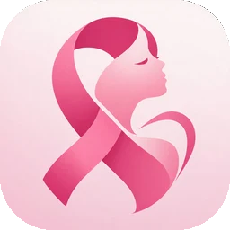

<!doctype html>
<html lang="pt-BR">
<head>
<meta charset="utf-8">
<meta name="viewport" content="width=device-width, initial-scale=1, viewport-fit=cover">
<title>MamamIA</title>
<meta name="description" content="Informação, apoio e orientação em todas as etapas da jornada de saúde das mamas.">
<meta name="theme-color" content="#FFF8FA">
<link rel="manifest" href="/manifest.webmanifest">
<link rel="icon" type="image/png" href="/icons/icon-192.png">
<link rel="apple-touch-icon" href="/icons/apple-touch-icon.png">
<meta name="apple-mobile-web-app-capable" content="yes">
<meta name="mobile-web-app-capable" content="yes">
<meta name="apple-mobile-web-app-title" content="MamamIA">
<link rel="stylesheet" href="/app.css">
<script src="/vendor/lucide.min.js"></script>
</head>
<body>

<div id="phone" class="relative flex h-full w-full flex-col overflow-hidden bg-fundo lg:flex-row">
  <main id="app" class="relative min-h-0 flex-1 pt-2 lg:order-2 lg:pt-6" style="padding-top:max(.5rem,env(safe-area-inset-top))"></main>
  <nav id="nav" class="relative z-10 grid grid-cols-5 items-end border-t border-linha bg-white px-1 pb-3 pt-1 lg:order-1 lg:flex lg:w-64 lg:shrink-0 lg:flex-col lg:items-stretch lg:gap-1 lg:border-r lg:border-t-0 lg:px-4 lg:py-6" style="padding-bottom:max(.75rem,env(safe-area-inset-bottom))"></nav>
  <div id="ov" class="absolute inset-0 z-30" hidden></div>
  <div id="toast" class="pointer-events-none absolute inset-x-6 bottom-24 z-50 mx-auto max-w-sm rounded-2xl bg-tinta px-4 py-3 text-center text-sm font-bold text-white shadow-xl lg:bottom-8" hidden></div>
</div>

<script>
const $=id=>document.getElementById(id), ic=()=>window.lucide&&lucide.createIcons();
const IMG={hero:'img/hero.webp',mia:'img/mia.webp',av:'img/avatar.webp',env:'img/envelope.webp',video:'img/video.webp',laptop:'img/laptop.webp'};
const GOO=`<svg viewBox="0 0 48 48" class="h-5 w-5" aria-hidden="true"><path fill="#FFC107" d="M43.6 20.1H42V20H24v8h11.3C33.7 32.7 29.2 36 24 36c-6.6 0-12-5.4-12-12s5.4-12 12-12c3.1 0 5.8 1.2 7.9 3.1l5.7-5.7C34 6.1 29.3 4 24 4 12.9 4 4 12.9 4 24s8.9 20 20 20 20-8.9 20-20c0-1.3-.1-2.6-.4-3.9z"/><path fill="#FF3D00" d="m6.3 14.7 6.6 4.8C14.7 15.1 19 12 24 12c3.1 0 5.8 1.2 7.9 3.1l5.7-5.7C34 6.1 29.3 4 24 4 16.3 4 9.7 8.3 6.3 14.7z"/><path fill="#4CAF50" d="M24 44c5.2 0 9.9-2 13.4-5.2l-6.2-5.2C29.2 35.1 26.7 36 24 36c-5.2 0-9.6-3.3-11.3-7.9l-6.5 5C9.5 39.6 16.2 44 24 44z"/><path fill="#1976D2" d="M43.6 20.1H42V20H24v8h11.3c-.8 2.2-2.2 4.2-4.1 5.6l6.2 5.2C37 39.2 44 34 44 24c0-1.3-.1-2.6-.4-3.9z"/></svg>`;
const APL=`<svg viewBox="0 0 384 512" class="h-5 w-5" fill="#000" aria-hidden="true"><path d="M318.7 268.7c-.2-36.7 16.4-64.4 50-84.8-18.8-26.9-47.2-41.7-84.7-44.6-35.5-2.8-74.3 20.7-88.5 20.7-15 0-49.4-19.7-76.4-19.7C63.3 141.2 4 184.8 4 273.5q0 39.3 14.4 81.2c12.8 36.7 59 126.7 107.2 125.2 25.2-.6 43-17.9 75.8-17.9 31.8 0 48.3 17.9 76.4 17.9 48.6-.7 90.4-82.5 102.6-119.3-65.2-30.7-61.7-90-61.7-91.9zm-56.6-164.2c27.3-32.4 24.8-61.9 24-72.5-24.1 1.4-52 16.4-67.9 34.9-17.5 19.8-27.8 44.3-25.6 71.9 26.1 2 49.9-11.4 69.5-34.3z"/></svg>`;
const LOGO=(s='text-lg')=>`<span class="flex items-center gap-1.5 font-black text-rosa ${s}">MamamIA</span>`;
const back=(fn,label='Voltar')=>`<button onclick="${fn}" aria-label="${label}" class="ib -ml-2"><i data-lucide="chevron-left"></i></button>`;
const page=(body,foot='')=>`<div class="flex h-full flex-col"><div id="sc" class="scr min-h-0 flex-1 overflow-y-auto"><div class="wrap">${body}</div></div>${foot?`<div class="border-t border-linha/60 bg-fundo px-5 pb-4 pt-3"><div class="wrap">${foot}</div></div>`:''}</div>`;
const bar=(title,b,right='')=>`<div class="sticky top-0 z-10 flex items-center gap-1 bg-fundo/95 px-4 py-1 backdrop-blur">${b?back(b):''}<h2 class="flex-1 truncate text-base font-extrabold">${title}</h2>${right}</div>`;
const sel=(id,label,opts,v,on='')=>`<div><label for="${id}" class="lbl">${label}</label><select id="${id}" class="inp" ${on}>${opts.map(o=>`<option ${o===v?'selected':''}>${o}</option>`).join('')}</select></div>`;
const brD=iso=>{const m=(iso||'').match(/^(\d{4})-(\d{2})-(\d{2})$/);return m?`${m[3]}/${m[2]}/${m[1]}`:''};
const isoD=id=>{const m=($(id)?.value||'').match(/^(\d{2})\/(\d{2})\/(\d{4})$/);if(!m)return '';const [_,d,mo,y]=m,dt=new Date(+y,+mo-1,+d);return dt.getDate()==+d&&dt.getMonth()==+mo-1?`${y}-${mo}-${d}`:''};
function mskD(e){let v=e.value.replace(/\D/g,'').slice(0,8);if(v.length>4)v=v.slice(0,2)+'/'+v.slice(2,4)+'/'+v.slice(4);else if(v.length>2)v=v.slice(0,2)+'/'+v.slice(2);e.value=v}
function mskH(e){let v=e.value.replace(/\D/g,'').slice(0,4);if(v.length>2)v=v.slice(0,2)+':'+v.slice(2);e.value=v}
const dIn=(id,iso,extra='')=>`<div class="relative"><input id="${id}" type="text" inputmode="numeric" autocomplete="off" maxlength="10" placeholder="DD/MM/AAAA" value="${brD(iso)}" oninput="mskD(this)" class="inp pr-12" ${extra}><span class="pointer-events-none absolute right-0 top-0 grid h-12 w-12 place-items-center text-rosa"><i data-lucide="calendar" class="h-5 w-5"></i></span><input type="date" tabindex="-1" aria-label="Abrir calendário" value="${iso||''}" onclick="try{this.showPicker()}catch(e){}" onchange="if(this.value){$('${id}').value=brD(this.value)}" style="position:absolute;right:0;top:0;width:48px;height:48px;opacity:0;cursor:pointer;font-size:16px"></div>`;
const hIn=(id,v)=>`<div class="relative"><input id="${id}" type="text" inputmode="numeric" autocomplete="off" maxlength="5" placeholder="HH:MM" value="${v||''}" oninput="mskH(this)" class="inp pr-12"><span class="pointer-events-none absolute right-0 top-0 grid h-12 w-12 place-items-center text-rosa"><i data-lucide="clock" class="h-5 w-5"></i></span><input type="time" tabindex="-1" aria-label="Abrir relógio" value="${v||''}" onclick="try{this.showPicker()}catch(e){}" onchange="if(this.value){$('${id}').value=this.value}" style="position:absolute;right:0;top:0;width:48px;height:48px;opacity:0;cursor:pointer;font-size:16px"></div>`;
const field=(id,label,ph,icon,type='text',val='')=>`<div><label for="${id}" class="lbl">${label}</label><div class="relative">${icon?`<i data-lucide="${icon}" class="pointer-events-none absolute left-3 top-3.5 h-5 w-5 text-suave"></i>`:''}<input id="${id}" type="${type}" placeholder="${ph}" value="${val}" class="inp ${icon?'pl-10':''} ${type==='password'?'pr-12':''}">${type==='password'?`<button type="button" onclick="olho('${id}',this)" aria-label="Mostrar senha" class="absolute right-0 top-0 grid h-12 w-12 place-items-center text-suave"><i data-lucide="eye" class="h-5 w-5"></i></button>`:''}</div></div>`;
function olho(id,b){const i=$(id);i.type=i.type==='password'?'text':'password';b.setAttribute('aria-label',i.type==='password'?'Mostrar senha':'Ocultar senha')}
function toast(t){const e=$('toast');e.textContent=t;e.hidden=false;clearTimeout(toast.h);toast.h=setTimeout(()=>e.hidden=true,2200)}
const OUT=['','JAN','FEV','MAR','ABR','MAI','JUN','JUL','AGO','SET','OUT','NOV','DEZ'];

/* ---------- ESTADO ---------- */
const MOM=[['Prevenção','shield-plus','bg-verde-bg text-verde','Cuidados e informações para manter sua saúde.'],['Alteração percebida','eye','bg-laranja-bg text-laranja','Quando você percebe alguma mudança e quer entender melhor.'],['Em investigação','search','bg-lilas-bg text-lilas','Quando está realizando exames para entender uma alteração.'],['Em tratamento','ribbon','bg-rosa-bg text-rosa','Quando está realizando um tratamento.'],['Acompanhamento / remissão','heart-pulse','bg-[#E4EEFB] text-[#2457A6]','Quando finalizou o tratamento e segue cuidando da sua saúde.']];
const MOMTXT={'Prevenção':'Nesta etapa, o foco é conhecer o seu corpo, manter hábitos saudáveis e fazer os exames de rotina no tempo certo.','Alteração percebida':'Nesta etapa, é importante anotar o que você percebeu e procurar uma avaliação profissional, sem pânico e sem adiar.','Em investigação':'Nesta etapa, a MIA ajuda a organizar exames, entender termos dos laudos e preparar suas dúvidas para as consultas.','Em tratamento':'Nesta etapa, é importante acompanhar o tratamento, registrar sintomas, entender os efeitos colaterais e cuidar de você em todas as áreas da sua vida.','Acompanhamento / remissão':'Nesta etapa, a MIA ajuda a lembrar consultas de seguimento, exames de controle e a retomar a rotina com cuidado.'};
const st={mom:'Em tratamento',idade:'45',hist:'Sim, parente de 1º grau',atend:'SUS',mamo:'Há mais de 2 anos',delicadas:false,outros:[],email:'seuemail@exemplo.com',ob:0,
  ftipo:'todos',fper:'10',fdia:null,draft:{},sel:null,
  pub:'mulheres',cats:[],dist:10,loc:'São Paulo, SP',fav:new Set(),place:null,from:null};
let R=[
  {id:1,d:15,m:10,k:'consulta',tit:'Consulta - Mastologista',esp:'Mastologista',hora:'09:30',pro:'Dra. Helena Prado',local:'Clínica Vida',end:'Av. Paulista, 1000 - São Paulo/SP',atend:'Convênio',obs:'Consulta de rotina. Levar documentos anteriores.',status:'Agendado',arq:[{n:'pedido-ultrassom.pdf',s:'0,8 MB'},{n:'carteirinha-convenio.jpg',s:'1,1 MB'}]},
  {id:2,d:20,m:10,k:'consulta',tit:'Consulta - Nutricionista',esp:'Nutricionista',hora:'14:00',pro:'Dra. Ana Souza',local:'Clínica Bem Viver',end:'Rua Vergueiro, 2100 - São Paulo/SP',atend:'Convênio',obs:'Levar diário alimentar da semana.',status:null},
  {id:3,d:22,m:10,k:'exame',tit:'Ultrassom das mamas',esp:'Ultrassonografia',hora:'10:00',pro:'Dr. Carlos Mendes',local:'Centro de Imagem',end:'Rua Domingos de Morais, 500 - São Paulo/SP',atend:'SUS',obs:'Ir sem desodorante.',status:'Agendado',arq:[{n:'preparo-exame.pdf',s:'0,3 MB'}]},
  {id:4,d:24,m:10,k:'laudo',tit:'Resultado de exame',sub:'Resultado da mamografia',desc:'Resultado da mamografia anual.',arq:[{n:'resultado-mamo.pdf',s:'2,4 MB'}]},
  {id:5,d:28,m:10,k:'nota',tit:'Anotação',sub:'Nódulo na mama direita',desc:'Senti um pequeno nódulo na mama direita. Não está doendo, mas percebi ao tomar banho.',arq:[{n:'foto-nodulo.jpg',s:'1,2 MB'}]},
  {id:6,d:5,m:10,k:'laudo',tit:'Resultado de exame',sub:'Hemograma completo',desc:'Exame de sangue pré-sessão.',arq:[{n:'hemograma.pdf',s:'0,4 MB'}]},
  {id:7,d:13,m:10,k:'nota',tit:'Sintoma',sub:'Cansaço (fadiga)',desc:'Intensidade moderada, quase todos os dias.'},
  {id:8,d:12,m:11,k:'consulta',tit:'Consulta - Oncologia',esp:'Oncologista',hora:'10:00',pro:'Dr. Paulo Lima',local:'Hospital Esperança',end:'Rua Cubatão, 300 - São Paulo/SP',atend:'SUS',obs:'Levar exames de outubro.',status:'Agendado'}];
let nextId=9;
const KIND={consulta:['stethoscope','bg-rosa-bg text-rosa','bg-rosa'],exame:['flask-conical','bg-lilas-bg text-lilas','bg-rosa'],laudo:['file-text','bg-lilas-bg text-lilas','bg-lilas'],nota:['pencil','bg-verde-bg text-verde','bg-verde']};
const STS={'Agendado':'bg-lilas-bg text-lilas','Realizado':'bg-verde-bg text-verde','Não realizado':'bg-[#FDE4E4] text-[#B42323]','Reagendado':'bg-laranja-bg text-laranja'};

const PL=[
  {id:1,pub:'mulheres',n:'Instituto Rosa Viva',c:['emocional','grupos'],km:2.1,b:'Pinheiros, SP',r:'Grupos de apoio, rodas de conversa e acompanhamento psicológico.',d:'Oferece atendimento psicológico, grupos de apoio, rodas de conversa e atividades para mulheres em tratamento.',e:'Rua das Flores, 123 – Pinheiros, São Paulo, SP',h:'Segunda a sexta · 8h às 17h',t:'(11) 91234-5678',m:'contato@rosaviva.org.br',w:'www.rosaviva.org.br',s:['Acompanhamento psicológico','Grupos de apoio','Rodas de conversa','Atividades para mulheres em tratamento'],p:'Mulheres em tratamento e sobreviventes.',x:38,y:30},
  {id:2,pub:'mulheres',n:'Casa de Direitos da Mulher',c:['juridica'],km:3.4,b:'Vila Mariana, SP',r:'Atendimento e orientação sobre direitos, benefícios e legislação.',d:'Orientação gratuita sobre direitos da paciente com câncer: Lei dos 60 dias, auxílio-doença, saque do FGTS e isenções.',e:'Rua Sena Madureira, 410 – Vila Mariana, São Paulo, SP',h:'Segunda a sexta · 9h às 18h',t:'(11) 93456-1200',m:'atendimento@casadireitos.org.br',w:'www.casadireitos.org.br',s:['Orientação jurídica','Apoio no acesso a benefícios','Oficinas sobre direitos'],p:'Mulheres em qualquer etapa da jornada.',x:62,y:58},
  {id:3,pub:'mulheres',n:'Rede Mulher Solidária',c:['emocional'],km:5.2,b:'Bela Vista, SP',r:'Grupos de apoio e atividades para mulheres em tratamento.',d:'Rede de voluntárias com encontros semanais, oficinas de autocuidado e doação de perucas e lenços.',e:'Rua Treze de Maio, 900 – Bela Vista, São Paulo, SP',h:'Terça e quinta · 14h às 18h',t:'(11) 95555-0101',m:'ola@mulhersolidaria.org',w:'www.mulhersolidaria.org',s:['Grupos de apoio','Oficinas de autocuidado','Banco de perucas e lenços'],p:'Mulheres em tratamento.',x:24,y:66},
  {id:4,pub:'mulheres',n:'Clínica-escola de Psicologia',c:['emocional'],km:8.7,b:'Perdizes, SP',r:'Atendimento psicológico gratuito com fila de espera.',d:'Atendimento individual por estudantes supervisionados, gratuito, com triagem online.',e:'Rua Monte Alegre, 984 – Perdizes, São Paulo, SP',h:'Segunda a sábado · 8h às 20h',t:'(11) 3670-0000',m:'clinica@psico.edu.br',w:'www.psico.edu.br/clinica',s:['Psicoterapia individual','Triagem online'],p:'Público geral, incluindo pacientes oncológicas.',x:78,y:24},
  {id:5,pub:'familiares',n:'Núcleo Cuidar de Quem Cuida',c:['emocional'],km:4.0,b:'Moema, SP',r:'Grupos para parceiros, filhos e cuidadores.',d:'Encontros quinzenais para familiares trocarem experiências e aprenderem a apoiar sem se esgotar.',e:'Av. Ibirapuera, 2300 – Moema, São Paulo, SP',h:'Sábados · 10h às 12h',t:'(11) 94444-2020',m:'contato@cuidardequemcuida.org',w:'www.cuidardequemcuida.org',s:['Grupos para familiares','Escuta individual'],p:'Familiares, parceiros e cuidadores.',x:50,y:40},
  {id:6,pub:'familiares',n:'Escola do Cuidador',c:['cuidadores'],km:6.8,b:'Santana, SP',r:'Orientação prática para acompanhar consultas e cuidados em casa.',d:'Cursos curtos e gratuitos sobre rotina de cuidados, alimentação e organização de consultas.',e:'Rua Voluntários da Pátria, 1500 – Santana, São Paulo, SP',h:'Quartas · 19h (online)',t:'(11) 92222-3030',m:'escola@cuidador.org',w:'www.cuidador.org',s:['Cursos para cuidadores','Material de apoio'],p:'Familiares e cuidadores.',x:30,y:20}];
const CAT={mulheres:[['emocional','Apoio emocional','(psicologia, grupos de apoio)','heart'],['juridica','Orientação jurídica','(direitos e benefícios)','scale']],familiares:[['emocional','Apoio emocional para familiares','(grupos e escuta)','heart'],['cuidadores','Orientação para cuidadores','(rotina e consultas)','hand-helping']]};
const CATN={emocional:'Apoio emocional',grupos:'Grupos de apoio',juridica:'Orientação jurídica',cuidadores:'Orientação para cuidadores'};

/* ---------- TELAS ---------- */
const S={};
const def=(id,g,t,d,nav,r,after)=>S[id]={g,t,d,nav,r,after};

/* Acesso */
def('login','Acesso','1. Login','A usuária entra com e-mail e senha ou por conta Google/Apple. Pode lembrar o acesso, recuperar a senha ou criar uma conta. No protótipo, entrar leva ao onboarding, depois à calibração e à Minha jornada.',null,()=>page(`
<div class="px-6 pb-4 pt-3 text-center"><div class="flex justify-center">${LOGO('text-2xl')}</div><p class="mx-auto mt-1 max-w-[260px] text-sm text-suave">Informação, apoio e orientação em todas as etapas da sua jornada de saúde das mamas.</p>
</div>
<div class="px-6 pb-6"><h2 class="text-xl font-black">Bem-vinda de volta 💗</h2><p class="text-sm text-suave">Entre para continuar sua jornada com a MamamIA.</p>
<div class="mt-3 grid grid-cols-2 rounded-full bg-rosa-bg p-1 text-sm font-extrabold"><span class="grid min-h-[40px] place-items-center rounded-full bg-rosa text-white">Entrar</span><button onclick="go('cadastro')" class="rounded-full text-rosa">Cadastrar</button></div>
<form class="mt-3 grid gap-3" onsubmit="event.preventDefault();entrar()">
${field('l-email','E-mail','Digite seu e-mail','mail','email')}${field('l-senha','Senha','Digite sua senha','lock','password')}
<div class="flex items-center justify-between text-sm"><label class="flex min-h-[48px] items-center gap-2"><input id="l-lembrar" type="checkbox" class="h-5 w-5 accent-[#D81F5E]">Lembrar de mim</label><button type="button" onclick="go('esqueci')" class="lk min-h-[48px]">Esqueci minha senha</button></div>
<button class="bp">Entrar</button></form>
<div class="my-3 flex items-center gap-3 text-xs text-suave"><span class="h-px flex-1 bg-linha"></span>ou<span class="h-px flex-1 bg-linha"></span></div>
<div class="grid gap-2"><button onclick="entrar()" class="bs border-linha text-tinta">${GOO}Continuar com Google</button><button onclick="entrar()" class="bs border-linha text-tinta">${APL}Continuar com Apple</button></div>
</div>`));

def('cadastro','Acesso','2. Cadastro','Quem não tem conta se cadastra com nome, e-mail e senha, ou com Google/Apple. Depois segue: confirmação de e-mail → onboarding → calibração → Minha jornada.',null,()=>page(`
<div class="flex items-center justify-between px-4 pt-1">${back("go('login')")}${LOGO()}<span class="w-12"></span></div>
<form class="grid gap-3 px-6 pb-6 pt-2" onsubmit="event.preventDefault();criar()" novalidate>
<div><h2 class="text-2xl font-black">Crie sua conta</h2><p class="text-sm text-suave">É rápido e simples. Assim podemos preparar uma experiência personalizada para você.</p></div>
<div class="grid grid-cols-2 rounded-full bg-rosa-bg p-1 text-sm font-extrabold"><button type="button" onclick="go('login')" class="min-h-[40px] rounded-full text-rosa">Entrar</button><span class="grid min-h-[40px] place-items-center rounded-full bg-rosa text-white">Cadastrar</span></div>
${field('c-nome','Nome completo','Digite seu nome','user','text','Ana Souza')}${field('c-email','E-mail','Digite seu e-mail','mail','email')}${field('c-senha','Senha','Crie uma senha','lock','password')}${field('c-senha2','Confirmar senha','Digite a senha novamente','lock','password')}
<label class="flex items-start gap-3 text-sm"><input id="c-termos" type="checkbox" class="mt-0.5 h-5 w-5 shrink-0 accent-[#D81F5E]"><span>Concordo com os <b class="text-rosa underline">Termos de Uso</b> e a <b class="text-rosa underline">Política de Privacidade</b>.</span></label>
<p id="c-erro" class="hidden rounded-xl bg-[#FDE4E4] p-2 text-xs font-bold text-[#B42323]"></p>
<button class="bp">Criar conta</button>
<div class="flex items-center gap-3 text-xs text-suave"><span class="h-px flex-1 bg-linha"></span>ou<span class="h-px flex-1 bg-linha"></span></div>
<button type="button" onclick="go('ob1')" class="bs border-linha text-tinta">${GOO}Cadastrar com Google</button><button type="button" onclick="go('ob1')" class="bs border-linha text-tinta">${APL}Cadastrar com Apple</button>
</form>`));
function criar(){const e=$('c-email').value.trim(),s=$('c-senha').value,s2=$('c-senha2').value,er=$('c-erro');let m='';
 if(!/^\S+@\S+\.\S+$/.test(e))m='Informe um e-mail válido, como nome@email.com.';else if(s.length<8)m='A senha precisa ter pelo menos 8 caracteres.';else if(s!==s2)m='As senhas não são iguais. Digite a mesma senha nos dois campos.';else if(!$('c-termos').checked)m='Para continuar, marque que concorda com os Termos de Uso e a Política de Privacidade.';
 if(m){er.textContent=m;er.classList.remove('hidden');return}st.email=e;go('confirma')}

const mailBox=(txt)=>`<div class="mx-auto mt-3 flex min-h-[48px] items-center justify-between rounded-full bg-rosa-bg px-5 text-sm font-bold">${st.email}<i data-lucide="pencil" class="h-4 w-4 text-rosa"></i></div><div class="mt-3 flex gap-3 rounded-2xl bg-white p-3 text-left text-xs text-suave shadow-sm"><i data-lucide="mail" class="h-5 w-5 shrink-0 text-rosa"></i><span>${txt}<br>Não encontrou? Verifique também a pasta de <b class="text-rosa">spam</b>.</span></div>`;
def('confirma','Acesso','3. Confirmação de cadastro','Após o cadastro, a usuária recebe um link no e-mail para confirmar a conta. Ao confirmar, segue para o onboarding.',null,()=>page(`
<div class="px-6 pb-6 pt-6 text-center"><div class="flex justify-center">${LOGO()}</div><h2 class="mt-4 text-2xl font-black">Confirme seu e-mail 💗</h2><p class="text-sm text-suave">Enviamos um link de confirmação para o e-mail informado:</p>
${mailBox('Acesse sua caixa de entrada e clique no link para confirmar sua conta.')}
<div class="mt-5 grid gap-2"><button onclick="toast('Simulação: e-mail confirmado');go('ob1')" class="bp">Abrir meu e-mail</button><button onclick="toast('Enviamos um novo link para '+st.email)" class="bs">Reenviar e-mail</button></div>
<button onclick="go('login')" class="lk mt-4 inline-flex min-h-[48px] items-center gap-1"><i data-lucide="chevron-left" class="h-4 w-4"></i>Voltar para o login</button></div>`));

def('esqueci','Acesso','4. Recuperar senha (passo 1)','A usuária informa o e-mail da conta para receber o link de redefinição de senha.',null,()=>page(`
<div class="flex items-center gap-2 px-4 pt-1">${back("go('login')")}${LOGO()}</div>
<form class="px-6 pb-6 pt-3" onsubmit="event.preventDefault();const v=$('e-email').value.trim();if(v)st.email=v;go('enviado')"><h2 class="text-2xl font-black">Esqueci minha senha</h2><p class="mt-1 text-sm text-suave">Informe o e-mail da sua conta para receber as instruções de recuperação da senha.</p>
<div class="mt-4">${field('e-email','E-mail','Digite seu e-mail','mail','email')}</div><button class="bp mt-4">Enviar instruções</button><p class="mt-2 text-center text-xs text-suave">Enviaremos um link para você criar uma nova senha.</p>

<div class="text-center"><button type="button" onclick="go('login')" class="lk mt-3 inline-flex min-h-[48px] items-center gap-1"><i data-lucide="chevron-left" class="h-4 w-4"></i>Voltar para o login</button></div></form>`));

def('enviado','Acesso','5. Recuperar senha (passo 2)','Confirma que o e-mail foi enviado com as instruções para redefinir a senha. Depois da redefinição, a usuária volta ao login.',null,()=>page(`
<div class="px-6 pb-6 pt-6 text-center"><div class="flex justify-center">${LOGO()}</div><div class="relative mx-auto mt-6 w-44"><span class="absolute -right-3 bottom-0 grid h-14 w-14 place-items-center rounded-full bg-rosa text-white shadow-lg"><i data-lucide="check" class="h-8 w-8"></i></span></div>
<h2 class="mt-5 text-2xl font-black">E-mail enviado! 💗</h2><p class="text-sm text-suave">Enviamos as instruções para redefinir sua senha para:</p>
${mailBox('Acesse sua caixa de entrada e clique no link para criar uma nova senha.')}<button onclick="go('login')" class="bp mt-5">Voltar para o login</button></div>`));

/* Onboarding */
const obFoot=(n,label,next)=>`<div class="mb-3 flex justify-center gap-2" aria-label="Passo ${n} de 4">${[1,2,3,4].map(k=>`<button onclick="go('ob${k}')" aria-label="Ir para o passo ${k}" class="grid h-6 place-items-center"><span class="block h-2 rounded-full ${k===n?'w-6 bg-rosa':'w-2 bg-rosa-md'}"></span></button>`).join('')}</div>${n>1?`<div class="grid grid-cols-[1fr_1.6fr] gap-3"><button onclick="go('ob${n-1}')" class="bs border-linha text-tinta"><i data-lucide="arrow-left" class="h-5 w-5"></i>Voltar</button><button onclick="go('${next}')" class="bp">${label}<i data-lucide="arrow-right" class="h-5 w-5"></i></button></div>`:`<button onclick="go('${next}')" class="bp">${label}<i data-lucide="arrow-right" class="h-5 w-5"></i></button>`}`;
const obTop=n=>`<div class="flex items-center justify-between px-4">${n>1?back(`go('ob${n-1}')`):'<span class="w-12"></span>'}<span class="rounded-full bg-lilas-bg px-3 py-1 text-[11px] font-extrabold uppercase tracking-wider text-lilas">Como funciona · ${n} de 4</span><button onclick="go('cal1')" class="min-h-[48px] px-2 text-sm font-bold text-suave">Pular</button></div>`;
def('ob1','Onboarding','1. Boas-vindas','Apresenta a MamamIA de forma acolhedora e mostra o propósito do aplicativo. O onboarding não pede dados pessoais.',null,()=>page(`${obTop(1)}
<div class="px-6 text-center"><h2 class="mt-6 flex items-center justify-center gap-2 text-4xl font-black text-rosa">MamamIA </h2><p class="mx-auto mt-3 max-w-[290px] text-base text-suave">Informação, apoio e orientação em todas as etapas da sua jornada de saúde das mamas.</p></div>`,obFoot(1,'Começar','ob2')));
def('ob2','Onboarding','2. O que a MamamIA realiza?','Explica de forma simples o que a MamamIA faz e quais são os seus principais benefícios, antes das funcionalidades.',null,()=>page(`${obTop(2)}
<div class="px-5 pb-4"><h2 class="text-2xl font-black leading-tight">O que a MamamIA realiza?</h2><p class="mt-2 text-sm text-suave">A MamamIA combina tecnologia e cuidado para apoiar você com informação confiável, orientação personalizada e recursos práticos na sua jornada de saúde das mamas.</p>
<div class="mt-4 grid divide-y divide-linha">${[['message-circle-more','Tira suas dúvidas','Converse com a MIA e receba orientações em linguagem simples e acolhedora.'],['clipboard-list','Organiza sua jornada','Registre sintomas, exames, consultas e dúvidas em um único lugar.'],['heart','Oferece orientações','Conteúdos confiáveis de acordo com o seu momento.'],['users','Ajuda a encontrar apoio','Acesse serviços, grupos e recursos que podem ajudar na sua jornada.']].map(([i,t,d])=>`<div class="flex items-start gap-3 py-2"><span class="ico bg-rosa-bg text-rosa"><i data-lucide="${i}"></i></span><span><b class="block text-sm">${t}</b><span class="text-xs text-suave">${d}</span></span></div>`).join('')}</div>
<p class="mt-3 flex items-center gap-2 rounded-2xl bg-lilas-bg p-3 text-xs text-tinta"><i data-lucide="shield-check" class="h-5 w-5 shrink-0 text-lilas"></i>A MamamIA orienta e apoia você, mas não substitui profissionais de saúde.</p></div>`,obFoot(2,'Avançar','ob3')));
def('ob3','Onboarding','3. Vídeo de apresentação','Mostra, na prática, como a MamamIA pode ajudar durante a jornada: conversar com a MIA, registrar sintomas, organizar consultas e encontrar atendimento.',null,()=>page(`${obTop(3)}
<div class="px-5 pb-4"><h2 class="text-2xl font-black leading-tight">Veja como a MamamIA pode te ajudar</h2><p class="mt-2 text-sm text-suave">Assista a um vídeo rápido e descubra como a MamamIA pode estar ao seu lado durante a sua jornada.</p>
<button onclick="video()" aria-label="Reproduzir vídeo de apresentação" class="mt-4 block w-full overflow-hidden rounded-3xl"></button>
<div class="mt-2 flex items-center gap-3 text-xs text-suave" style="font-variant-numeric:tabular-nums"><div class="h-1.5 flex-1 rounded-full bg-rosa-md"><div id="vbar" class="h-1.5 w-0 rounded-full bg-rosa transition-all"></div></div><span id="vt">0:00 / 1:00</span><i data-lucide="maximize" class="h-4 w-4"></i></div>
<div class="mt-3 rounded-2xl bg-rosa-bg/60 p-4"><b class="text-sm">Neste vídeo você vai ver:</b><ul class="mt-2 grid gap-2 text-sm">${[['message-circle-more','Como conversar com a MIA'],['file-text','Como registrar sintomas'],['calendar-days','Como organizar suas consultas'],['map-pin','Como encontrar atendimento'],['sparkles','Outros recursos da MamamIA']].map(([i,t])=>`<li class="flex items-center gap-3"><i data-lucide="${i}" class="h-5 w-5 text-rosa"></i>${t}</li>`).join('')}</ul></div></div>`,obFoot(3,'Avançar','ob4')));
function video(){let s=0;clearInterval(video.t);video.t=setInterval(()=>{s+=2;if(!$('vbar')||s>60)return clearInterval(video.t);$('vbar').style.width=(s/60*100)+'%';$('vt').textContent=`0:${String(s).padStart(2,'0')} / 1:00`.replace('0:60','1:00')},150)}
def('ob4','Onboarding','4. Orientações para o seu momento','Apresenta as etapas da jornada e mostra que a MamamIA adapta os conteúdos para cada fase. Em seguida começa a calibração.',null,()=>page(`${obTop(4)}
<div class="px-5 pb-4"><h2 class="text-2xl font-black leading-tight">Orientações para o seu momento</h2><p class="mt-2 text-sm text-suave">Cada mulher pode estar vivendo uma etapa diferente. Por isso, a MamamIA adapta os conteúdos e orientações ao seu momento.</p>
<div class="mt-4 grid divide-y divide-linha">${MOM.map(([n,i,c,d])=>`<div class="flex items-start gap-3 py-2"><span class="ico ${c}"><i data-lucide="${i}"></i></span><span><b class="block text-sm">${n}</b><span class="text-xs text-suave">${d}</span></span></div>`).join('')}</div>
<p class="mt-3 flex items-center gap-2 rounded-2xl bg-rosa-bg/60 p-3 text-sm font-bold text-tinta"><i data-lucide="flower-2" class="h-5 w-5 text-rosa"></i>Seu momento pode mudar. E sua jornada também.</p></div>`,obFoot(4,'Avançar','cal1')));

/* Calibração */
const STEPS=['Seu momento','Sobre você','Suas consultas e exames','Concluir'];
const stepper=(cur,labels=STEPS)=>`<div class="flex items-start px-4 pb-2">${labels.map((l,k)=>{const n=k+1,done=n<cur,on=n===cur;return `<div class="relative flex flex-1 flex-col items-center text-center">${k?`<span class="absolute right-1/2 top-3.5 h-0.5 w-full ${n<=cur?'bg-rosa':'bg-rosa-md'}"></span>`:''}<span class="relative z-10 grid h-7 w-7 place-items-center rounded-full text-xs font-black ${done?'bg-rosa text-white':on?'bg-rosa text-white ring-4 ring-rosa-md':'border-2 border-rosa-md bg-white text-rosa-md'}">${done?'<i data-lucide="check" class="h-4 w-4"></i>':n}</span><span class="mt-1 text-[10px] leading-tight ${on?'font-extrabold text-rosa':'text-suave'}">${l}</span></div>`}).join('')}</div>`;
const calTop=(cur,b,skip=true)=>`<div class="flex items-center justify-between px-4">${back(b)}${skip?`<button onclick="go('jornada')" class="min-h-[48px] px-2 text-sm font-bold text-rosa">Pular</button>`:''}</div>${stepper(cur)}`;
const duo=(b,n,lab='Continuar')=>`<div class="grid grid-cols-[1fr_1.6fr] gap-3"><button onclick="${b}" class="bs border-linha text-tinta">Voltar</button><button onclick="${n}" class="bp">${lab}<i data-lucide="arrow-right" class="h-5 w-5"></i></button></div>`;
def('cal1','Calibração','1. Boas-vindas','Explica o objetivo da calibração de forma acolhedora e simples, deixando claro que as informações serão usadas para personalizar a experiência.',null,()=>page(`${calTop(1,"go('ob4')",false)}
<div class="px-6 pb-4 pt-3"><h2 class="text-2xl font-black leading-tight">Vamos começar a sua jornada <i data-lucide="heart" class="inline h-6 w-6 text-rosa"></i></h2><p class="mt-2 text-sm text-suave">Estas informações ajudam a MamamIA a entender o seu momento e oferecer orientações mais úteis e personalizadas para você.</p></div>`,`<button onclick="go('cal2')" class="bp">Vamos lá<i data-lucide="arrow-right" class="h-5 w-5"></i></button>`));
def('cal2','Calibração','2. Seu momento','Mostra todas as etapas da jornada com ícones e uma breve explicação. A usuária seleciona o seu momento atual e pode mudar quando quiser.',null,()=>page(`${calTop(2,"go('cal1')")}
<div class="px-5 pb-4 pt-2"><h2 class="text-xl font-black">Em qual momento você está hoje?</h2><p class="mt-1 text-sm text-suave">Essa informação nos ajuda a mostrar conteúdos e orientações mais adequados para o seu momento. Você pode alterar quando quiser.</p>
<div class="mt-4 grid gap-2" role="radiogroup">${MOM.map(([n,i,c,d])=>`<button role="radio" aria-checked="${n===st.mom}" onclick="st.mom='${n}';go('cal2',1)" class="opt ${n===st.mom?'on':''}"><span class="ico ${c}"><i data-lucide="${i}"></i></span><span class="flex-1"><b class="block text-sm">${n}</b><span class="text-xs text-suave">${d}</span></span>${n===st.mom?'<i data-lucide="circle-check" class="h-6 w-6 fill-rosa text-white"></i>':'<i data-lucide="chevron-right" class="h-5 w-5 text-suave"></i>'}</button>`).join('')}</div></div>`,duo("go('cal1')","go('cal3')")));
def('cal3','Calibração','3. Sobre você','Coleta informações importantes de forma clara e opcional, com linguagem acolhedora e a opção de não responder perguntas delicadas agora.',null,()=>page(`${calTop(3,"go('cal2')")}
<div class="px-5 pb-4 pt-2"><h2 class="text-xl font-black">Um pouco sobre você</h2><p class="mt-1 text-sm text-suave">Essas informações ajudam a MamamIA a entender melhor o seu contexto e sugerir conteúdos mais úteis para a sua realidade.</p>
<div class="card mt-4 grid gap-4 p-4">
<div><label for="k-idade" class="lbl">Idade</label><input id="k-idade" inputmode="numeric" value="${st.idade}" placeholder="Ex.: 45 anos" oninput="st.idade=this.value" class="inp"></div>
<div id="k-hist-w" class="${st.delicadas?'opacity-40':''}"><label for="k-hist" class="lbl flex items-center gap-1">Histórico familiar de câncer de mama ou ovário <span title="Mãe, irmã ou filha. Ajuda a indicar quando conversar com um especialista." class="text-lilas"><i data-lucide="info" class="h-4 w-4"></i></span></label><select id="k-hist" ${st.delicadas?'disabled':''} onchange="st.hist=this.value" class="inp">${['Sim, parente de 1º grau','Sim, outro parente','Não','Não sei'].map(o=>`<option ${o===st.hist?'selected':''}>${o}</option>`).join('')}</select></div>
<div><label for="k-at" class="lbl">Você utiliza qual tipo de atendimento?</label><select id="k-at" onchange="st.atend=this.value" class="inp">${['SUS','Convênio','Particular'].map(o=>`<option ${o===st.atend?'selected':''}>${o}</option>`).join('')}</select></div>
<label class="flex items-center justify-between gap-3 rounded-xl bg-lilas-bg p-3 text-sm"><span>Prefiro não responder perguntas delicadas agora<span class="block text-xs text-suave">Todas as perguntas sensíveis são opcionais.</span></span><input id="k-del" type="checkbox" class="sw" ${st.delicadas?'checked':''} onchange="st.delicadas=this.checked;go('cal3',1)"></label></div></div>`,duo("go('cal2')","go('cal4')")));
def('cal4','Calibração','4. Consultas e exames','Coleta informações sobre exames para organizar lembretes e próximos passos, deixando claro por que essas informações ajudam a orientar a jornada.',null,()=>page(`${calTop(4,"go('cal3')")}
<div class="px-5 pb-4 pt-2"><h2 class="text-xl font-black">Suas consultas e exames</h2><p class="mt-1 text-sm text-suave">Essas informações nos ajudam a organizar lembretes e sugerir próximos passos para a sua jornada.</p>
<div class="card mt-4 p-4"><label for="k-mamo" class="lbl">Quando foi a sua última mamografia?</label><select id="k-mamo" onchange="st.mamo=this.value" class="inp">${['Nos últimos 12 meses','Entre 1 e 2 anos','Há mais de 2 anos','Nunca fiz','Não lembro'].map(o=>`<option ${o===st.mamo?'selected':''}>${o}</option>`).join('')}</select>
<p class="mt-3 flex items-center gap-2 rounded-xl bg-rosa-bg/70 p-3 text-xs"><i data-lucide="bell-ring" class="h-4 w-4 shrink-0 text-rosa"></i>Vamos lembrar você quando for o momento de realizar um novo exame.</p></div>
<fieldset class="card mt-3 p-4"><legend class="sr-only">Outros exames</legend><b class="text-sm">Você já realizou outros exames?</b><p class="text-xs text-suave">Selecione os que já fez (opcional)</p>
<div class="mt-2 grid">${['Ultrassom de mamas','Ressonância magnética','Biópsia','Não realizei outros exames','Prefiro não informar'].map((o,k)=>`<label class="flex min-h-[44px] items-center gap-3 text-sm"><input id="k-ex${k}" type="checkbox" ${st.outros.includes(o)?'checked':''} onchange="tgl(st.outros,'${o}')" class="h-5 w-5 accent-[#D81F5E]">${o}</label>`).join('')}</div></fieldset></div>`,duo("go('cal3')","go('cal5')")));
function tgl(a,v){const i=a.indexOf(v);i<0?a.push(v):a.splice(i,1)}
def('cal5','Calibração','5. Resumo e conclusão','Mostra um resumo das informações para a usuária confirmar, com opção de editar. Em seguida, direciona para a Minha jornada, onde a MIA é o centro da experiência.',null,()=>page(`${calTop(5,"go('cal4')",false)}
<div class="px-5 pb-4 pt-2"><h2 class="text-2xl font-black">Tudo pronto! 🎉</h2><p class="mt-1 text-sm text-suave">Com essas informações, a MamamIA já pode começar a te acompanhar com conteúdos e orientações mais relevantes para o seu momento.</p>
<div class="card mt-4 p-4"><div class="flex items-center justify-between"><b>Seu resumo</b><button onclick="go('cal2')" class="flex min-h-[40px] items-center gap-1 rounded-full bg-rosa-bg px-3 text-xs font-extrabold text-rosa"><i data-lucide="pencil" class="h-3.5 w-3.5"></i>Editar</button></div>
<div class="mt-2 divide-y divide-linha">${[['ribbon','Momento atual',st.mom],['calendar','Idade',(st.idade||'Não informado')+(/^\d+$/.test(st.idade)?' anos':'')],['users','Histórico familiar',st.delicadas?'Prefiro não responder agora':st.hist],['building-2','Tipo de atendimento',st.atend],['clipboard-list','Última mamografia',st.mamo]].map(([i,l,v])=>`<div class="flex items-center gap-3 py-2.5"><span class="ico h-10 w-10 bg-lilas-bg text-lilas"><i data-lucide="${i}" class="h-5 w-5"></i></span><span><span class="block text-xs text-suave">${l}</span><b class="text-sm">${v}</b></span></div>`).join('')}</div></div>
<p class="mt-3 flex items-center gap-2 text-xs text-suave"><i data-lucide="info" class="h-4 w-4"></i>Você poderá alterar essas informações sempre que quiser no seu perfil.</p></div>`,`<button onclick="go('inicio')" class="bp">Ver minha jornada<i data-lucide="arrow-right" class="h-5 w-5"></i></button>`));

/* Início */
const CONT={'Em tratamento':[['Artigo','file-text','bg-rosa-bg','Cuidando de você durante o tratamento'],['Vídeo','circle-play','bg-lilas-bg','Como lidar com a fadiga'],['Nutrição','apple','bg-laranja-bg','Alimentação durante o tratamento'],['Bem-estar','flower-2','bg-rosa-bg','Saúde emocional e autocuidado'],['Depoimento','users','bg-lilas-bg','Histórias que inspiram'],['Dicas práticas','list-checks','bg-verde-bg','Rotina e cuidados do dia a dia']],'_':[['Artigo','file-text','bg-rosa-bg','Conhecendo as suas mamas'],['Vídeo','circle-play','bg-lilas-bg','Como é feita a mamografia'],['Nutrição','apple','bg-laranja-bg','Alimentação e prevenção'],['Bem-estar','flower-2','bg-rosa-bg','Ansiedade antes dos exames'],['Depoimento','users','bg-lilas-bg','Histórias que inspiram'],['Dicas práticas','list-checks','bg-verde-bg','Seus direitos no SUS e no convênio']]};
def('inicio','Início','Tela inicial','Saudação acolhedora, conteúdos que abrem ao toque, a próxima consulta e o atalho para a Rede de Apoio.','inicio',()=>{const nx=R.filter(r=>r.k==='consulta'&&(r.m>10||r.d>=8)).sort((a,b)=>a.m-b.m||a.d-b.d)[0];return page(`
<div class="flex min-h-[48px] items-center px-5 pt-1 lg:hidden">${LOGO()}</div>
<div class="flex items-center px-5"><div class="min-w-0 flex-1"><h2 class="text-4xl font-black leading-none">Olá!</h2><p class="mt-1 text-xl font-black leading-tight">Que bom te ver aqui! <span class="text-rosa">♡</span></p><p class="mt-2 text-xs text-suave">A MamamIA está com você em todas as etapas da sua jornada de saúde das mamas.</p></div></div>
<div class="px-5"><div class="mt-5 flex items-center justify-between"><h3 class="text-sm font-black">Conteúdos para ${st.mom==='Em tratamento'?'quem está em tratamento':'o seu momento'}</h3><button class="min-h-[40px] shrink-0 whitespace-nowrap text-xs font-extrabold text-rosa" onclick="go('conteudos')">Ver todos ›</button></div>
<div class="mt-2 grid grid-cols-2 gap-2 md:grid-cols-3">${(CONT[st.mom]||CONT._).map(([c,i,bg,t])=>`<button onclick="abrirCont('${t}')" class="${bg} flex min-h-[96px] flex-col justify-between rounded-2xl p-3 text-left"><span class="flex items-center gap-1.5 text-[11px] font-bold text-suave"><i data-lucide="${i}" class="h-4 w-4 text-rosa"></i>${c}</span><b class="text-sm leading-snug">${t}</b></button>`).join('')}</div>
${nx?`<button onclick="st.sel=${nx.id};go('detalhe')" class="card my-4 flex w-full items-center gap-3 p-3 text-left"><span class="ico bg-rosa-bg text-rosa"><i data-lucide="calendar-days"></i></span><span class="flex-1"><b class="block text-sm">Próxima consulta</b><span class="text-xs text-suave">${nx.esp} · ${nx.d} de ${OUT[nx.m].toLowerCase()}. · ${nx.hora}</span></span><i data-lucide="chevron-right" class="h-5 w-5 text-rosa"></i></button>`:''}
<button onclick="go('apoio')" class="mb-6 flex w-full items-center gap-3 rounded-2xl bg-lilas-bg p-4 text-left"><span class="ico bg-white text-lilas"><i data-lucide="users"></i></span><span class="flex-1"><b class="block text-sm">Rede de Apoio</b><span class="text-xs text-suave">Encontre grupos, apoio emocional e orientação jurídica perto de você.</span></span><i data-lucide="chevron-right" class="h-5 w-5 text-lilas"></i></button></div>`)});

/* ---------- CONTEÚDOS DA HOME ---------- */
const FONTE='Fonte: Instituto Nacional de Câncer (INCA) e Ministério da Saúde. Conteúdo educativo: não substitui a orientação da sua equipe de saúde.';
const CTX={
'Cuidando de você durante o tratamento':{tipo:'Artigo',min:'4 min de leitura',intro:'O tratamento do câncer de mama mexe com o corpo, com a rotina e com as emoções. Pequenos cuidados no dia a dia ajudam você a atravessar essa fase com mais conforto e segurança.',sec:[['Respeite o seu ritmo','Alguns dias serão mais leves, outros mais cansativos. Tudo bem diminuir o ritmo, pausar tarefas e descansar sem culpa. Ouvir o próprio corpo também é cuidado.'],['Organize a sua rotina','Anote horários de medicamentos, sessões e consultas. Ter tudo num só lugar diminui a sobrecarga e ajuda a não esquecer nada importante. O calendário da MamamIA pode ajudar nisso.'],['Peça e aceite ajuda','Familiares e amigos muitas vezes querem ajudar, mas não sabem como. Diga do que você precisa: uma carona, uma refeição pronta, companhia na consulta.'],['Converse com a sua equipe','Sintomas novos, dúvidas sobre efeitos colaterais ou medos merecem ser compartilhados com a equipe de saúde. Leve suas perguntas anotadas para não esquecer nenhuma.']]},
'Como lidar com a fadiga':{tipo:'Vídeo',dur:'3:20',intro:'A fadiga é um dos efeitos mais comuns durante o tratamento. Neste vídeo, uma enfermeira explica por que ela acontece e o que pode aliviar.',cap:[['0:00','O que é a fadiga do tratamento'],['0:45','Por que ela acontece'],['1:30','Atividade física leve ajuda'],['2:15','Sono e pausas ao longo do dia'],['2:50','Quando falar com a equipe']],res:['Caminhadas leves, quando liberadas pela equipe, costumam reduzir o cansaço.','Planeje as tarefas mais pesadas para os horários em que você tem mais energia.','Cochilos curtos (até 30 minutos) ajudam mais que longos.','Cansaço intenso, falta de ar ou tontura devem ser comunicados à equipe.']},
'Alimentação durante o tratamento':{tipo:'Nutrição',intro:'Comer bem ajuda o corpo a se recuperar e a tolerar melhor o tratamento. Não existe dieta milagrosa: o mais importante é variedade, hidratação e respeito ao seu apetite.',dicas:[['droplet','Hidrate-se','Beba água ao longo do dia, em pequenos goles. Água de coco e chás claros também contam.'],['utensils','Faça pequenas refeições','Comer em menor quantidade, de 3 em 3 horas, ajuda quando há enjoo ou pouco apetite.'],['salad','Prefira alimentos naturais','Frutas, legumes, verduras, arroz, feijão e ovos são a base de um prato equilibrado.'],['shield-check','Cuide da higiene','Lave bem frutas e verduras e evite alimentos crus de origem animal, como carne malpassada.']],dia:[['Café da manhã','Pão com ovo mexido, mamão e chá'],['Lanche','Iogurte natural com banana'],['Almoço','Arroz, feijão, frango desfiado e legumes cozidos'],['Lanche da tarde','Frutas picadas e água de coco'],['Jantar','Sopa de legumes com carne moída']],alerta:'Restrições e suplementos devem ser orientados pela nutricionista da sua equipe.'},
'Saúde emocional e autocuidado':{tipo:'Bem-estar',intro:'Sentir medo, tristeza ou irritação faz parte. Cuidar das emoções é tão importante quanto cuidar do corpo. Experimente o exercício de respiração abaixo: ele leva cerca de 1 minuto.',praticas:[['moon','Durma com regularidade','Tente deitar e acordar em horários parecidos.'],['music','Faça algo que te dá prazer','Música, leitura, uma série ou um passeio curto.'],['users','Fale sobre o que sente','Com alguém de confiança, um grupo de apoio ou um psicólogo.'],['sparkles','Seja gentil com você','Troque a cobrança por acolhimento nos dias difíceis.']]},
'Histórias que inspiram':{tipo:'Depoimento',intro:'Relatos de mulheres que passaram pela jornada e quiseram compartilhar o que as ajudou.',dep:[['Marta, 52 anos','Em tratamento','O que mais me ajudou foi anotar tudo. Eu chegava nas consultas com as perguntas prontas e saía muito mais tranquila.'],['Juliana, 38 anos','Acompanhamento','Aceitar ajuda foi difícil no começo. Hoje sei que deixar minha irmã ir comigo nas sessões fez toda a diferença.'],['Rosa, 61 anos','Remissão','Entrei num grupo de apoio e descobri que não estava sozinha. Ouvir outras mulheres me deu coragem.']],aviso:'Depoimentos ilustrativos, criados para este protótipo acadêmico.'},
'Rotina e cuidados do dia a dia':{tipo:'Dicas práticas',intro:'Uma lista simples para ajudar a organizar o dia. Marque o que você já fez hoje.',itens:['Tomar os medicamentos no horário','Beber pelo menos 8 copos de água','Hidratar a pele com creme sem perfume','Fazer uma caminhada leve, se liberada','Registrar sintomas no calendário','Separar as dúvidas para a próxima consulta','Reservar um momento para descansar']},
'Conhecendo as suas mamas':{tipo:'Artigo',min:'3 min de leitura',intro:'Conhecer o próprio corpo ajuda a perceber mudanças cedo. A observação das mamas no dia a dia, no banho ou ao trocar de roupa, faz parte do cuidado.',sec:[['O que observar','Caroço (nódulo) endurecido, pele da mama avermelhada ou parecida com casca de laranja, alterações no mamilo, saída de líquido anormal e pequenos nódulos nas axilas ou no pescoço.'],['Sem pânico','A maioria das alterações não é câncer. Mesmo assim, qualquer mudança persistente deve ser avaliada por um profissional de saúde.'],['Mamografia','Para mulheres de 50 a 69 anos, o Ministério da Saúde recomenda a mamografia de rastreamento a cada 2 anos. Com histórico familiar, converse com seu médico sobre começar antes.']]},
'Como é feita a mamografia':{tipo:'Vídeo',dur:'2:45',intro:'Entenda o passo a passo do exame e chegue mais tranquila no dia.',cap:[['0:00','Para que serve a mamografia'],['0:40','Como se preparar'],['1:20','Como é o exame'],['2:10','Quando sai o resultado']],res:['No dia do exame, não use desodorante, talco ou creme nas mamas e axilas.','O exame leva poucos minutos e pode causar um desconforto rápido.','Leve exames anteriores para comparação.','O resultado é descrito pela classificação BI-RADS e deve ser avaliado pelo médico.']},
'Alimentação e prevenção':{tipo:'Nutrição',intro:'Hábitos saudáveis ajudam a reduzir o risco de vários tipos de câncer, inclusive o de mama.',dicas:[['salad','Mais alimentos naturais','Frutas, legumes, verduras e grãos integrais no dia a dia.'],['beef','Menos ultraprocessados','Evite embutidos, refrigerantes e salgadinhos.'],['wine','Evite bebidas alcoólicas','O consumo de álcool está associado a maior risco de câncer de mama.'],['footprints','Mexa-se','Pelo menos 150 minutos de atividade física por semana.']],dia:[['Café da manhã','Pão integral, queijo branco e fruta'],['Almoço','Arroz, feijão, salada e peixe'],['Jantar','Omelete com legumes']],alerta:'Converse com um profissional para adaptar a alimentação à sua realidade.'},
'Ansiedade antes dos exames':{tipo:'Bem-estar',intro:'É natural sentir ansiedade enquanto espera um exame ou um resultado. O exercício de respiração abaixo ajuda a acalmar o corpo em cerca de 1 minuto.',praticas:[['clipboard-list','Prepare-se com antecedência','Separe documentos e exames anteriores na véspera.'],['users','Leve companhia','Ter alguém de confiança ao lado ajuda.'],['message-circle-heart','Converse com a MIA','Ela pode explicar termos do laudo em linguagem simples.']]},
'Seus direitos no SUS e no convênio':{tipo:'Dicas práticas',intro:'Conhecer seus direitos ajuda a garantir o atendimento no tempo certo. Marque o que você já conhece.',itens:['Lei dos 60 dias: o tratamento no SUS deve começar em até 60 dias após o diagnóstico','Lei dos 30 dias: exames para confirmar a suspeita devem ser feitos em até 30 dias','Mamografia de rastreamento gratuita no SUS para mulheres de 50 a 69 anos','Convênios devem cobrir os procedimentos do rol da ANS','Possibilidade de saque do FGTS e do PIS/PASEP em caso de câncer','Reconstrução mamária garantida pelo SUS e pelos planos de saúde']}};
function abrirCont(t){st.cont=t;go('conteudo')}
const ctHead=(c,t)=>{const k=(CONT[st.mom]||CONT._).concat(CONT._,CONT['Em tratamento']).find(x=>x[3]===t)||['Artigo','file-text','bg-rosa-bg',t];return `<div class="${k[2]} mx-4 rounded-3xl p-5"><span class="flex items-center gap-1.5 text-xs font-extrabold text-rosa"><i data-lucide="${k[1]}" class="h-4 w-4"></i>${c.tipo}${c.min?' · '+c.min:''}${c.dur?' · '+c.dur:''}</span><h2 class="mt-1 text-2xl font-black leading-tight" style="text-wrap:balance">${t}</h2><p class="mt-2 text-sm text-suave">${c.intro}</p></div>`};
function respirar(){const c=$('br'),l=$('brl');if(!c)return;clearTimeout(respirar.t);const F=[['Inspire',4000,1.35],['Segure',4000,1.35],['Solte o ar devagar',6000,1]];let n=0;const step=()=>{if(!$('br'))return;if(n>=9){l.textContent='Muito bem 💗';c.style.transform='scale(1)';return}const [txt,ms,sc]=F[n%3];l.textContent=`${txt} · ciclo ${Math.floor(n/3)+1} de 3`;c.style.transitionDuration=ms+'ms';c.style.transform=`scale(${sc})`;n++;respirar.t=setTimeout(step,ms)};step()}
function playVid(dur){const [m,s]=dur.split(':').map(Number),tot=m*60+s;let t=0;clearInterval(playVid.i);$('vplay')?.classList.add('hidden');playVid.i=setInterval(()=>{if(!$('vb2'))return clearInterval(playVid.i);t+=tot/60;if(t>=tot){t=tot;clearInterval(playVid.i)}$('vb2').style.width=(t/tot*100)+'%';$('vt2').textContent=`${Math.floor(t/60)}:${String(Math.floor(t%60)).padStart(2,'0')} / ${dur}`},120)}
def('conteudo','Início','Conteúdo','Abre o conteúdo escolhido na tela inicial: artigo, vídeo, nutrição, bem-estar, depoimento ou dicas práticas.','inicio',()=>{const t=st.cont||'Cuidando de você durante o tratamento',c=CTX[t];let b='';
 if(c.tipo==='Artigo')b=c.sec.map(([h,p])=>`<section><h3 class="text-lg font-black">${h}</h3><p class="mt-1 text-[15px] leading-relaxed text-tinta/90">${p}</p></section>`).join('');
 if(c.tipo==='Vídeo')b=`<div class="relative overflow-hidden rounded-3xl"><button id="vplay" onclick="playVid('${c.dur}')" aria-label="Reproduzir vídeo" class="absolute inset-0"></button></div>
<div class="flex items-center gap-3 text-xs text-suave" style="font-variant-numeric:tabular-nums"><div class="h-1.5 flex-1 rounded-full bg-rosa-md"><div id="vb2" class="h-1.5 w-0 rounded-full bg-rosa transition-all"></div></div><span id="vt2">0:00 / ${c.dur}</span></div>
<section><h3 class="font-black">Neste vídeo</h3><ul class="mt-2 grid gap-1">${c.cap.map(([tm,x])=>`<li class="flex gap-3 text-sm"><b class="w-10 shrink-0 text-rosa" style="font-variant-numeric:tabular-nums">${tm}</b>${x}</li>`).join('')}</ul></section>
<section class="rounded-2xl bg-white p-4 shadow-sm"><h3 class="font-black">Resumo</h3><ul class="mt-2 grid gap-2 text-sm">${c.res.map(x=>`<li class="flex gap-2"><i data-lucide="check" class="h-5 w-5 shrink-0 text-rosa"></i>${x}</li>`).join('')}</ul></section>`;
 if(c.tipo==='Nutrição')b=`<div class="grid gap-3 md:grid-cols-2">${c.dicas.map(([i,h,p])=>`<div class="flex gap-3 rounded-2xl bg-white p-4 shadow-sm"><span class="ico bg-laranja-bg text-laranja"><i data-lucide="${i}"></i></span><span><b class="block text-sm">${h}</b><span class="text-sm text-suave">${p}</span></span></div>`).join('')}</div>
<section><h3 class="font-black">Exemplo de um dia</h3><div class="mt-2 divide-y divide-linha rounded-2xl bg-white shadow-sm">${c.dia.map(([r,x])=>`<div class="flex gap-3 p-3 text-sm"><b class="w-28 shrink-0 text-rosa">${r}</b><span>${x}</span></div>`).join('')}</div></section>
<p class="flex gap-2 rounded-2xl bg-lilas-bg p-3 text-xs"><i data-lucide="info" class="h-4 w-4 shrink-0 text-lilas"></i>${c.alerta}</p>`;
 if(c.tipo==='Bem-estar')b=`<section class="grid place-items-center rounded-3xl bg-white p-6 text-center shadow-sm"><h3 class="font-black">Respiração 4-4-6</h3><div class="my-6 grid h-40 w-40 place-items-center"><div id="br" class="h-28 w-28 rounded-full bg-gradient-to-br from-rosa-md to-lilas-bg transition-transform ease-in-out"></div></div><p id="brl" class="min-h-[24px] text-sm font-bold text-tinta">Toque em começar e siga o círculo</p><button onclick="respirar()" class="bp mt-4 max-w-xs">Começar exercício</button></section>
<section><h3 class="font-black">Pequenos cuidados que fazem diferença</h3><div class="mt-2 grid gap-2 md:grid-cols-2">${c.praticas.map(([i,h,p])=>`<div class="flex gap-3 rounded-2xl bg-white p-3 shadow-sm"><i data-lucide="${i}" class="h-6 w-6 shrink-0 text-rosa"></i><span><b class="block text-sm">${h}</b><span class="text-sm text-suave">${p}</span></span></div>`).join('')}</div></section>`;
 if(c.tipo==='Depoimento')b=c.dep.map(([n,m,q])=>`<figure class="rounded-3xl bg-white p-5 shadow-sm"><i data-lucide="quote" class="h-6 w-6 text-rosa"></i><blockquote class="mt-2 text-[15px] leading-relaxed">${q}</blockquote><figcaption class="mt-3 text-sm"><b>${n}</b> · <span class="text-suave">${m}</span></figcaption></figure>`).join('')+`<p class="text-center text-xs text-suave">${c.aviso}</p>`;
 if(c.tipo==='Dicas práticas'){st.chk=st.chk||{};const done=c.itens.filter((_,k)=>st.chk[t+k]).length;b=`<div class="flex items-center gap-3"><div class="h-2 flex-1 rounded-full bg-rosa-md"><div class="h-2 rounded-full bg-rosa transition-all" style="width:${done/c.itens.length*100}%"></div></div><span class="text-xs font-bold text-suave">${done} de ${c.itens.length}</span></div><div class="grid gap-2">${c.itens.map((x,k)=>`<label class="flex min-h-[52px] cursor-pointer items-center gap-3 rounded-2xl bg-white p-3 text-sm shadow-sm"><input type="checkbox" ${st.chk[t+k]?'checked':''} onchange="st.chk['${t.replace(/'/g,"\\'")}'+${k}]=this.checked;go('conteudo',1)" class="h-5 w-5 shrink-0 accent-[#D81F5E]"><span class="${st.chk[t+k]?'text-suave line-through':''}">${x}</span></label>`).join('')}</div>`}
 return page(`${bar(c.tipo,"go('inicio')",`<button onclick="toast('Conteúdo salvo nos favoritos')" aria-label="Salvar conteúdo" class="ib text-rosa"><i data-lucide="bookmark"></i></button>`)}${ctHead(c,t)}<div class="grid gap-5 px-5 pb-6 pt-5">${b}<p class="flex gap-2 border-t border-linha pt-4 text-xs text-suave"><i data-lucide="book-open-check" class="h-4 w-4 shrink-0 text-lilas"></i>${FONTE}</p></div>`,`<button onclick="go('chat')" class="bs"><i data-lucide="message-circle-heart" class="h-5 w-5"></i>Tirar uma dúvida com a MIA</button>`)});
def('conteudos','Início','Todos os conteúdos','Lista os conteúdos disponíveis para o momento da usuária.','inicio',()=>page(`${bar('Conteúdos para você',"go('inicio')")}<div class="grid grid-cols-2 gap-2 px-5 pb-6 md:grid-cols-3">${[...(CONT[st.mom]||CONT._),...(st.mom==='Em tratamento'?CONT._:CONT['Em tratamento'])].filter((x,k,a)=>a.findIndex(y=>y[3]===x[3])===k).map(([c,i,bg,t])=>`<button onclick="abrirCont('${t}')" class="${bg} flex min-h-[96px] flex-col justify-between rounded-2xl p-3 text-left"><span class="flex items-center gap-1.5 text-[11px] font-bold text-suave"><i data-lucide="${i}" class="h-4 w-4 text-rosa"></i>${c}</span><b class="text-sm leading-snug">${t}</b></button>`).join('')}</div>`));

/* Minha jornada + MIA */
def('jornada','Minha jornada','1. Resumo da jornada','A usuária vê em qual etapa está e edita a qualquer momento suas informações de saúde, que ajustam a jornada.','jornada',()=>page(`
<div class="flex min-h-[48px] items-center px-5 pt-1 lg:hidden">${LOGO()}</div>
<div class="px-5 pb-4"><h2 class="flex items-center gap-2 text-3xl font-black">Minha jornada</h2><p class="text-sm text-suave">Aqui é o seu espaço para acompanhar cada etapa da sua jornada de saúde das mamas, com apoio da MIA.</p>
<div class="my-4 flex items-center gap-2 overflow-hidden rounded-3xl bg-rosa-bg/70 p-4"><div class="min-w-0 flex-1"><span class="text-xs text-suave">Você está em:</span><b class="block text-lg font-black">${st.mom}</b><p class="mt-1 text-xs text-suave">${MOMTXT[st.mom]}</p></div></div>
${(()=>{const l=R.filter(r=>r.k==='laudo').sort((x,y)=>y.m-x.m||y.d-x.d);return `<section class="card mb-4 p-4"><div class="flex items-center justify-between gap-2"><h3 class="flex items-center gap-2 text-sm font-black"><i data-lucide="file-text" class="h-5 w-5 text-rosa"></i>Meus resultados</h3><button onclick="novo('laudo')" class="flex min-h-[40px] items-center gap-1 rounded-full bg-rosa-bg px-3 text-xs font-extrabold text-rosa"><i data-lucide="plus" class="h-4 w-4"></i>Adicionar</button></div>${l.length?`<ul class="mt-2 grid gap-2">${l.map(r=>`<li><button onclick="st.sel=${r.id};go('detalhe')" class="flex min-h-[56px] w-full items-center gap-3 rounded-xl bg-fundo p-2 text-left"><span class="ico h-10 w-10 bg-lilas-bg text-lilas"><i data-lucide="file-text" class="h-5 w-5"></i></span><span class="min-w-0 flex-1"><b class="block truncate text-sm">${r.sub}</b><span class="text-xs text-suave">${String(r.d).padStart(2,'0')}/${String(r.m).padStart(2,'0')}/2026 · ${(r.arq||[]).length} arquivo${(r.arq||[]).length===1?'':'s'}</span></span><i data-lucide="chevron-right" class="h-4 w-4 shrink-0 text-suave"></i></button></li>`).join('')}</ul>`:'<p class="mt-2 text-xs text-suave">Você ainda não adicionou resultados de exames.</p>'}</section>`})()}
${sec('Informações de saúde','heart-pulse',`<p class="-mt-1 text-xs text-suave">Mantenha seus dados atualizados. Eles ajustam os conteúdos e as orientações da MIA.</p>${sel('j-mom','Momento atual da jornada',MOM.map(m=>m[0]),st.mom)}<div><label for="j-idade" class="lbl">Idade</label><input id="j-idade" inputmode="numeric" class="inp" value="${st.idade}"></div>${sel('j-hist','Histórico familiar de câncer de mama ou ovário',['Sim, parente de 1º grau','Sim, outro parente','Não','Não sei','Prefiro não responder'],st.delicadas?'Prefiro não responder':st.hist)}${sel('j-at','Tipo de atendimento',['SUS','Convênio','Particular'],st.atend)}${sel('j-mamo','Última mamografia',['Nos últimos 12 meses','Entre 1 e 2 anos','Há mais de 2 anos','Nunca fiz','Não lembro'],st.mamo)}`)}</div>`,`<button onclick="salvarSaude()" class="bp">Salvar minha jornada</button>`));
function salvarSaude(){const v=id=>$(id).value;st.mom=v('j-mom');st.idade=v('j-idade');const h=v('j-hist');st.delicadas=h==='Prefiro não responder';if(!st.delicadas)st.hist=h;st.atend=v('j-at');st.mamo=v('j-mamo');go('jornada',1);toast('Jornada atualizada')}
def('conheca','Minha jornada','2. Apresentação da MIA','Explica quem é a MIA, como ela funciona e reforça que ela não faz diagnósticos.','chat',()=>page(`${bar('',"go('jornada')")}
<div class="px-5 pb-4 text-center"><h2 class="text-2xl font-black">Conheça a MIA</h2><p class="text-sm text-suave">Sua assistente de orientação para a jornada de saúde das mamas.</p>
<div class="mt-3 grid gap-2 text-left">${[['sparkles','Converse de forma simples e acolhedora','A MIA está aqui para te ouvir, orientar e apoiar, no seu tempo.'],['file-text','Informações personalizadas','Ela considera o momento que você está na sua jornada para sugerir conteúdos mais relevantes.'],['shield-check','Sem diagnósticos','A MIA não faz diagnósticos e não substitui profissionais de saúde. Ela orienta e ajuda você a entender os próximos passos.']].map(([i,t,d])=>`<div class="card flex gap-3 p-3"><i data-lucide="${i}" class="h-6 w-6 shrink-0 text-rosa"></i><span><b class="block text-sm text-rosa">${t}</b><span class="text-xs text-suave">${d}</span></span></div>`).join('')}</div></div>`,`<button onclick="go('chat')" class="bp">Iniciar conversa com a MIA<i data-lucide="chevron-right" class="h-5 w-5"></i></button>`));
def('chat','Minha jornada','3. Conversa com a MIA','A MIA recebe a usuária com acolhimento e oferece os assuntos: sintomas, próxima consulta, qualidade de vida, rede de apoio e outros. Em cada assunto, sugere 5 perguntas e responde sem diagnosticar, levando às telas certas do app.',null,()=>`<div class="flex h-full flex-col">
<div class="flex items-center gap-2 border-b border-linha bg-white px-3 py-1">${back("go('conheca')")}<div class="flex-1"><b class="text-rosa">MIA</b><p class="text-xs text-suave">Sua assistente de orientação</p></div><button onclick="chatHTML=null;go('chat')" aria-label="Recomeçar conversa" class="ib"><i data-lucide="rotate-ccw" class="h-5 w-5"></i></button></div>
<div id="msgs" class="scr min-h-0 flex-1 space-y-3 overflow-y-auto px-3 py-3 text-sm"><div class="wrap space-y-3" id="msgw"></div></div>
<form onsubmit="event.preventDefault();livre()" class="border-t border-linha bg-white px-3 py-2"><div class="wrap flex items-center gap-2"><button type="button" aria-label="Anexar arquivo" onclick="toast('Para anexar laudos e fotos, use Calendário › Adicionar registro')" class="ib text-suave"><i data-lucide="paperclip" class="h-5 w-5"></i></button><label for="m-in" class="sr-only">Mensagem</label><input id="m-in" placeholder="Digite sua mensagem..." autocomplete="off" class="min-h-[48px] min-w-0 flex-1 rounded-full bg-fundo px-4 text-sm"><button aria-label="Enviar" class="grid h-12 w-12 shrink-0 place-items-center rounded-full bg-rosa text-white"><i data-lucide="send" class="h-5 w-5"></i></button></div></form></div>`,()=>{st.fromChat=0;chatAbrir()});

const sc=()=>{const m=$('msgs');if(m)m.scrollTop=m.scrollHeight};
const add=h=>{$('msgw')?.insertAdjacentHTML('beforeend',h);ic();sc()};
const me=t=>add(`<div class="fade flex items-end justify-end gap-2"><div class="max-w-[78%] rounded-2xl rounded-br-md bg-rosa-bg px-3 py-2 text-tinta">${t}</div><span class="grid h-8 w-8 shrink-0 place-items-center rounded-full bg-rosa-bg text-rosa"><i data-lucide="user-round" class="h-4 w-4"></i></span></div>`);
const wait=ms=>new Promise(r=>setTimeout(r,ms));
let chatRun=0,asked=new Set(),chatHTML=null,chatTop=0;
function chatAbrir(){if(chatHTML!==null){$('msgw').innerHTML=chatHTML;ic();$('msgs').scrollTop=chatTop}else chatStart()}
async function mia(h,ms=650){const run=chatRun;add(`<div id="typing" class="flex items-end gap-2"><div class="dots rounded-2xl bg-lilas-bg px-3 py-3 text-lilas"><span>●</span><span>●</span><span>●</span></div></div>`);await wait(ms);$('typing')?.remove();if(run!==chatRun)throw 0;add(`<div class="fade flex items-start gap-2"><div class="max-w-[80%] rounded-2xl rounded-tl-md bg-lilas-bg/70 px-3 py-2 text-tinta">${h}</div></div>`)}
/* botões da conversa: guardam a ação numa lista para evitar problemas com aspas */
const CB=[];const cb=f=>(CB.push(f),CB.length-1);
function opts(items,cols){const id='g'+CB.length;add(`<div id="${id}" class="fade grid ${cols?'grid-cols-2':''} gap-2 pl-10">${items.map(([i,l,f])=>`<button onclick="tap('${id}',this,${cb(f)})" class="flex min-h-[48px] items-center gap-2 rounded-2xl border border-linha bg-white px-3 py-2 text-left text-sm font-bold text-tinta"><i data-lucide="${i}" class="h-4 w-4 shrink-0 text-rosa"></i><span>${l}</span></button>`).join('')}</div>`)}
function tap(id,b,n){$(id).querySelectorAll('button').forEach(x=>{x.disabled=true;if(x!==b)x.classList.add('opacity-50')});b.classList.add('border-rosa','bg-rosa-bg');Promise.resolve(CB[n]()).catch(()=>{})}
function acts(items){add(`<div class="fade grid gap-2 pl-10">${items.map(([i,l,f])=>`<button onclick="st.fromChat=1;CB[${cb(f)}]()" class="flex min-h-[48px] items-center gap-3 rounded-2xl border-2 border-rosa/30 bg-white px-3 py-2 text-left text-sm font-extrabold text-rosa"><i data-lucide="${i}" class="h-5 w-5 shrink-0"></i><span class="flex-1">${l}</span><i data-lucide="chevron-right" class="h-4 w-4 shrink-0"></i></button>`).join('')}</div>`)}
const nxt=()=>R.filter(r=>(r.k==='consulta'||r.k==='exame')&&r.status!=='Realizado'&&(r.m>10||r.d>=8)).sort((a,b)=>a.m-b.m||a.d-b.d)[0];
const dm=r=>`${String(r.d).padStart(2,'0')}/${String(r.m).padStart(2,'0')}`;
const ul=l=>`<ul class="mt-1 list-disc space-y-1 pl-4">${l.map(x=>`<li>${x}</li>`).join('')}</ul>`;
const apoioLista=(pub,cats)=>()=>{st.pub=pub;st.cats=cats;st.dist=20;st.onlyFav=0;go('apoio-lista')};

const TT={
sint:{n:'Sintomas durante o tratamento',i:'pill',intro:'Obrigada por confiar em mim para falar sobre isso. 💗 Cada corpo reage de um jeito, e tudo o que você sente merece atenção. Separei algumas dúvidas que aparecem bastante. Toque em uma delas ou escreva com suas palavras:',qs:[
 {q:'Estou sentindo muito cansaço. Isso é normal?',kw:'cansaco fadiga cansada sem energia exausta',sint:'Cansaço (fadiga)',a:'Entendo que esse momento pode ser desafiador, e é muito importante que você se sinta acolhida. 💗<br><br>O cansaço pode acontecer durante alguns tratamentos, mas a intensidade varia de pessoa para pessoa. Pausas ao longo do dia, sono regular e caminhadas leves (quando liberadas pela equipe) costumam ajudar.<br><br>Se estiver intenso, persistente ou te preocupando, converse com sua equipe de saúde para avaliar o que você está sentindo.'},
 {q:'Estou com enjoo depois das sessões. O que pode ajudar?',kw:'enjoo nausea vomito vomitando enjoada',sint:'Náusea',a:'Sinto muito que você esteja passando por isso. O enjoo é desconfortável, mas existem formas de aliviar. 💗'+ul(['Faça pequenas refeições, de 3 em 3 horas','Prefira alimentos frios ou em temperatura ambiente','Evite cheiros fortes e frituras','Beba líquidos em pequenos goles, entre as refeições'])+'<br>Sua equipe pode indicar remédios que ajudam. Se não conseguir se alimentar ou beber líquidos, avise a equipe o quanto antes.'},
 {q:'Meu cabelo começou a cair. Vai voltar a crescer?',kw:'cabelo queda careca peruca lenco',sint:'Queda de cabelo',a:'Eu sei que essa mudança pode mexer muito com a autoestima, e tudo bem sentir isso. 💗<br><br>Em muitos tratamentos a queda de cabelo é temporária, e os fios costumam voltar a crescer algumas semanas depois do fim das sessões. Sua equipe pode te dizer o que esperar no seu caso.<br><br>Lenços, toucas e perucas podem ajudar. Na Rede de Apoio, a <b>Rede Mulher Solidária</b> tem um banco de perucas e lenços.'},
 {q:'Não estou conseguindo dormir direito. O que posso fazer?',kw:'sono dormir insonia acordando noite',sint:'Alterações no sono',a:'Noites mal dormidas deixam tudo mais pesado, e eu quero te ajudar com isso. 💗'+ul(['Tente deitar e acordar em horários parecidos','Evite telas e cafeína perto da hora de dormir','Faça cochilos curtos durante o dia, de até 30 minutos','Experimente um exercício de respiração antes de deitar'])+'<br>Se a insônia continuar, conte para sua equipe de saúde.'},
 {q:'Quando devo procurar atendimento com urgência?',kw:'urgencia urgente emergencia febre pronto socorro grave',a:'Que bom que você quer estar preparada. 💗 Durante o tratamento, procure <b>imediatamente</b> o serviço indicado pela sua equipe se tiver:'+ul(['Febre (37,8 °C ou mais)','Falta de ar ou dor no peito','Sangramento que não para','Vômitos que não deixam você se alimentar ou beber líquidos','Dor muito forte ou inchaço repentino no braço'])+'<br>Deixe o telefone da sua equipe sempre à mão. Na dúvida, procure atendimento.'}]},
cons:{n:'Próxima consulta',i:'calendar-days',intro:'Vamos juntas deixar tudo organizado para a sua consulta. 💗 Ir preparada traz mais tranquilidade.',qs:[
 {q:()=>`Quando e onde é ${nomeC()}?`,kw:'quando onde data horario local endereco consulta',a:()=>{const r=st.cc;return r.id?`${cap(nomeC())} está marcada para <b>${dm(r)} às ${r.hora}</b>, na ${r.local}${r.end?` (${r.end})`:''}${r.pro?`, com ${r.pro}`:''}. 💗<br><br>No calendário você vê todos os detalhes, os documentos e pode atualizar o status.`:`${cap(nomeC())} ainda não está no seu calendário. Se você adicionar, eu te ajudo a lembrar da data e a se preparar. 💗`},acts:()=>st.cc.id?[['calendar-days','Ver detalhes da consulta',()=>{st.sel=st.cc.id;go('detalhe')}]]:[['plus','Adicionar ao calendário',addCC]]},
 {q:()=>`Como posso me preparar para ${nomeC()}?`,kw:'preparar preparo levar documentos antes',a:()=>`Que bom que você quer chegar preparada para ${nomeC()}. 💗 Para ${st.cc.k==='exame'?'esse exame':'essa consulta'}, vale:`+ul(prepC())+'<br>Você pode anexar exames e laudos em <b>Ver documentos</b>, dentro do registro da consulta no calendário.',acts:()=>st.cc.id?[['paperclip','Abrir a consulta e os documentos',()=>{st.sel=st.cc.id;go('detalhe')}]]:[['plus','Adicionar ao calendário',addCC]]},
 {q:()=>`Que perguntas posso fazer ${aoProf()}?`,kw:'perguntas perguntar medico doutora doutor duvidas',a:()=>`Toda pergunta é importante, nenhuma é boba. 💗 Para ${nomeC()}, algumas ideias:`+ul(pergC())+'<br>Anote as suas no calendário para não esquecer na hora.',acts:[['notebook-pen','Anotar minhas dúvidas',()=>novo('nota')]]},
 {q:'Como adiciono uma nova consulta ou exame?',kw:'adicionar nova consulta exame marcar registrar agenda',a:'É bem simples, vou te mostrar o caminho. 💗'+ul(['Vá em <b>Calendário › Adicionar registro</b>','Escolha <b>Consulta ou exame</b> e depois o tipo','Preencha as informações e anexe documentos, se quiser','Confira o resumo e toque em <b>Salvar registro</b>'])+'<br>Se preferir, eu abro para você agora.',acts:[['plus','Adicionar consulta ou exame',()=>{st.draft={k:'consulta'};go('add-tipo')}]]},
 {q:()=>`Não vou conseguir ir ${aoA()}. O que faço?`,kw:'faltar remarcar desmarcar nao vou conseguir ir cancelar',a:'Imprevistos acontecem, não se preocupe. 💗 O mais importante é não ficar sem acompanhamento:'+ul(['Avise a clínica ou o serviço o quanto antes e peça uma nova data','No calendário, toque no status da consulta e marque <b>Não realizado</b> ou <b>Reagendado</b>','Se tiver um comprovante da remarcação, anexe em <b>Ver documentos</b>']),acts:()=>st.cc.id?[['calendar-sync','Abrir a consulta',()=>{st.sel=st.cc.id;go('detalhe')}]]:[]}]},
vida:{n:'Qualidade de vida',i:'heart',intro:'Cuidar de você vai muito além do tratamento, e eu fico feliz em conversar sobre isso. 💗 Escolha um tema:',qs:[
 {q:'O que posso comer durante o tratamento?',kw:'comer alimentacao comida dieta nutricao',a:'Comer bem ajuda o corpo a se recuperar, e não precisa ser complicado. 💗 Priorize comida de verdade (arroz, feijão, legumes, frutas, ovos), beba água ao longo do dia e faça pequenas refeições quando o apetite estiver baixo.<br><br>Restrições e suplementos devem ser orientados pela nutricionista da sua equipe. Separei um conteúdo completo para você:',acts:[['apple','Ler: Alimentação durante o tratamento',()=>abrirCont('Alimentação durante o tratamento')]]},
 {q:'Posso fazer atividade física?',kw:'atividade fisica exercicio caminhada academia',a:'Movimentar o corpo costuma fazer muito bem, inclusive para o cansaço. 💗 Atividades leves, como caminhadas curtas e alongamentos, geralmente ajudam, sempre respeitando os seus limites.<br><br>Antes de começar ou mudar a rotina, confirme com sua equipe o que é seguro no seu momento.',acts:[['circle-play','Ver vídeo: Como lidar com a fadiga',()=>abrirCont('Como lidar com a fadiga')]]},
 {q:'Estou me sentindo muito ansiosa. Como lidar?',kw:'ansiosa ansiedade triste tristeza medo emocional chorar',a:'Obrigada por me contar. O que você sente é importante, e você não precisa passar por isso sozinha. 💗<br><br>Respirar devagar, conversar com alguém de confiança e fazer pequenas pausas ao longo do dia podem ajudar. Se a ansiedade estiver atrapalhando sua rotina, um psicólogo pode te acompanhar, e existem opções gratuitas na Rede de Apoio.',acts:[['wind','Fazer o exercício de respiração',()=>abrirCont('Saúde emocional e autocuidado')],['users','Ver apoio emocional perto de mim',apoioLista('mulheres',['emocional'])]]},
 {q:'Como cuidar da pele durante o tratamento?',kw:'pele ressecada hidratar creme sol radioterapia',a:'A pele pode ficar mais sensível nessa fase, e alguns cuidados simples fazem diferença. 💗'+ul(['Hidrate com cremes sem perfume','Tome banhos mornos e seque sem esfregar','Use protetor solar e evite sol forte','Prefira roupas de algodão e mais soltas'])+'<br>Se fizer radioterapia, siga as orientações específicas da sua equipe sobre a área tratada.'},
 {q:'Como organizar minha rotina nos dias mais difíceis?',kw:'rotina organizar dia dificil tarefas',a:'Nos dias mais pesados, vale fazer menos e se cobrar menos. 💗 Escolha uma ou duas prioridades, peça ajuda com o resto e reserve um tempo para descansar. Preparei uma lista simples de cuidados para você marcar ao longo do dia:',acts:[['list-checks','Abrir: Rotina e cuidados do dia a dia',()=>abrirCont('Rotina e cuidados do dia a dia')]]}]},
apoio:{n:'Rede de apoio',i:'users',intro:'Ter com quem contar faz toda a diferença, e eu posso te ajudar a encontrar esse apoio. 💗 Na Rede de Apoio da MamamIA há opções para você e para quem está ao seu lado. O que você gostaria de saber?',qs:[
 {q:'Onde encontro grupos de apoio perto de mim?',kw:'grupo grupos apoio perto proximo encontros',a:'Que bom que você está buscando companhia nessa caminhada. 💗 Perto de você, encontrei:'+ul(['<b>Instituto Rosa Viva</b>, Pinheiros (2,1 km): grupos de apoio, rodas de conversa e acompanhamento psicológico','<b>Rede Mulher Solidária</b>, Bela Vista (5,2 km): encontros semanais e oficinas de autocuidado'])+'<br>Na Rede de Apoio você vê endereço, horários, contatos e pode salvar o local nos favoritos.',acts:[['users','Ver locais de apoio emocional',apoioLista('mulheres',['emocional'])]]},
 {q:'Preciso de orientação sobre meus direitos. Onde procuro?',kw:'direitos juridica advogado beneficio lei inss fgts',a:'Conhecer seus direitos traz mais segurança. 💗 A <b>Casa de Direitos da Mulher</b>, na Vila Mariana (3,4 km), oferece orientação gratuita sobre a Lei dos 60 dias, auxílio-doença, saque do FGTS e isenções.<br><br>Também separei um conteúdo com os principais direitos no SUS e no convênio.',acts:[['scale','Ver orientação jurídica',apoioLista('mulheres',['juridica'])],['file-text','Ler: Seus direitos no SUS e no convênio',()=>abrirCont('Seus direitos no SUS e no convênio')]]},
 {q:'Tem apoio psicológico gratuito?',kw:'psicologo psicologia terapia gratuito gratis',a:'Tem sim, e procurar esse apoio é um ato de cuidado com você. 💗'+ul(['<b>Clínica-escola de Psicologia</b>, Perdizes (8,7 km): atendimento individual gratuito, com triagem online','<b>Instituto Rosa Viva</b>, Pinheiros (2,1 km): acompanhamento psicológico para mulheres em tratamento']),acts:[['brain','Ver a Clínica-escola de Psicologia',()=>{st.pub='mulheres';st.place=4;go('apoio-local')}],['heart-handshake','Ver o Instituto Rosa Viva',()=>{st.pub='mulheres';st.place=1;go('apoio-local')}]]},
 {q:'Como minha família pode me apoiar?',kw:'familia familiares marido parceiro filhos cuidador companheiro',a:'Quem está ao seu lado também pode receber orientação. 💗 Na Rede de Apoio existe a área <b>Apoio para companheiros e familiares</b>, com opções como:'+ul(['<b>Núcleo Cuidar de Quem Cuida</b>, Moema: grupos para parceiros, filhos e cuidadores','<b>Escola do Cuidador</b>: cursos gratuitos sobre rotina de cuidados e consultas'])+'<br>No seu Perfil, você também pode compartilhar sua agenda com a rede de apoio.',acts:[['users','Ver apoio para familiares',apoioLista('familiares',[])]]},
 {q:'Como salvo um local para ver depois?',kw:'salvar favorito favoritos guardar local',a:'É rapidinho. 💗'+ul(['Abra a <b>Rede de Apoio</b> e escolha o local','Toque no <b>coração</b> no topo da tela','Pronto: ele aparece em <b>Meus favoritos</b>, na primeira tela da Rede de Apoio'])+'<br>Quer abrir a Rede de Apoio agora?',acts:[['heart','Abrir a Rede de Apoio',()=>go('apoio')]]}]},
out:{n:'Outros assuntos',i:'circle-help',intro:'Pode me perguntar o que quiser, estou aqui para te ouvir. 💗 Algumas dúvidas que costumam aparecer:',qs:[
 {q:'O que significa BI-RADS no meu laudo?',kw:'birads bi-rads laudo resultado significa categoria',a:'Entendo que ler um laudo pode gerar ansiedade. Vou te explicar de forma simples. 💗<br><br>BI-RADS é uma forma padronizada de descrever os achados da mamografia e do ultrassom, em categorias de 0 a 6. Cada categoria indica qual costuma ser o próximo passo, como repetir o exame, acompanhar ou investigar mais.<br><br>Só o seu médico pode interpretar o seu resultado. Leve o laudo na consulta e pergunte o que ele significa para você.',acts:[['file-text','Ver meus resultados',()=>go('jornada')]]},
 {q:'Com que frequência devo fazer mamografia?',kw:'mamografia frequencia quando fazer rastreamento idade',a:'Ótima pergunta, a prevenção faz diferença. 💗 O Ministério da Saúde recomenda a mamografia de rastreamento para mulheres de <b>50 a 69 anos, a cada 2 anos</b>.<br><br>Se você tem histórico familiar ou já está em acompanhamento, a frequência pode ser diferente: siga a orientação do seu médico.'},
 {q:'Como mudo o meu momento na jornada?',kw:'mudar momento jornada etapa alterar tratamento remissao',a:'Sua jornada pode mudar, e o app acompanha você. 💗'+ul(['Toque em <b>Jornada</b> no menu','Em <b>Informações de saúde</b>, escolha o seu momento atual','Toque em <b>Salvar minha jornada</b>'])+'<br>Assim os conteúdos e as minhas orientações se ajustam ao seu momento.',acts:[['route','Abrir minha jornada',()=>go('jornada')]]},
 {q:'Onde vejo os resultados de exames que enviei?',kw:'onde vejo resultados exames enviei laudos documentos',a:'Seus resultados ficam guardados com cuidado. 💗 Você encontra todos no card <b>Meus resultados</b>, na sua Jornada. Eles também aparecem no Calendário, na data de cada documento.',acts:[['file-text','Ver meus resultados',()=>go('jornada')]]},
 {q:'A MIA pode me dar um diagnóstico?',kw:'diagnostico diagnosticar tenho cancer doenca',a:'Essa é uma pergunta muito importante, e eu quero ser transparente com você. 💗<br><br>Não. Eu não faço diagnósticos e não substituo profissionais de saúde. Meu papel é te acolher, explicar informações de forma simples, ajudar a organizar sua jornada e te orientar sobre os próximos passos. Quem avalia o seu caso é sempre a sua equipe de saúde.'}]}};
/* ---- consulta escolhida na conversa ---- */
const cap=t=>t.charAt(0).toUpperCase()+t.slice(1);
const AREA={Mastologista:'mastologia',Oncologista:'oncologia',Nutricionista:'nutrição',Ginecologista:'ginecologia','Psicólogo(a)':'psicologia'};
const nomeC=()=>{const r=st.cc||{};return r.k==='exame'?`o exame de ${(r.tit||r.esp||'').toLowerCase()}`:`a consulta de ${AREA[r.esp]||(r.esp||'').toLowerCase()}`};
const aoA=()=>nomeC().replace(/^a /,'à ').replace(/^o /,'ao ');
const aoProf=()=>{const p=(st.cc||{}).pro;return p?(/^dra/i.test(p)?`à ${p}`:`ao ${p}`):((st.cc||{}).k==='exame'?'sobre '+nomeC():'ao médico')};
const prepC=()=>{const e=(st.cc||{}).esp||'',k=(st.cc||{}).k;
 if(k==='exame')return ['Não use desodorante, talco ou creme nas mamas e axilas no dia','Vá com roupa de duas peças, fica mais fácil se trocar','Leve o pedido médico, documento e carteirinha (se for convênio)','Leve exames anteriores para comparação'];
 if(e==='Mastologista')return ['Leve mamografias, ultrassons e laudos anteriores','Anote o que você percebeu nas mamas: onde, quando começou e se mudou','Vá com roupa de duas peças, para facilitar o exame físico','Leve a lista dos remédios que está usando'];
 if(e==='Oncologista')return ['Leve os exames de sangue mais recentes','Revise os sintomas e efeitos que registrou no calendário desde a última consulta','Leve a lista de remédios e suplementos','Se puder, vá com alguém de confiança'];
 if(e==='Nutricionista')return ['Anote o que você comeu nos últimos 3 dias','Conte como está o apetite, enjoos e o intestino','Se souber, informe seu peso recente','Leve a lista de suplementos e vitaminas'];
 return ['Anote suas dúvidas e sintomas dos últimos dias','Leve exames e laudos anteriores','Leve a lista dos remédios que está usando','Se puder, vá com alguém de confiança']};
const pergC=()=>{const e=(st.cc||{}).esp||'',k=(st.cc||{}).k;
 if(k==='exame')return ['Quanto tempo o exame dura?','Preciso de algum preparo especial?','Quando sai o resultado?','Posso voltar sozinha e dirigir depois?','Para qual médico devo levar o resultado?'];
 if(e==='Mastologista')return ['O que os meus exames mostraram?','Preciso fazer outros exames?','Qual é o próximo passo?','O que devo observar até o retorno?','Quando devo voltar?'];
 if(e==='Oncologista')return ['Como está a resposta ao tratamento?','Quais efeitos posso sentir e o que fazer?','Quando devo procurar a equipe com urgência?','Posso tomar outros remédios ou suplementos?','Posso manter o trabalho e as minhas atividades?'];
 if(e==='Nutricionista')return ['O que comer nos dias de enjoo?','Preciso de algum suplemento?','Como manter o meu peso?','Quais alimentos devo evitar?','Quanto de água devo beber por dia?'];
 return ['Qual é o próximo passo do meu cuidado?','Preciso fazer algum exame?','O que devo observar até o retorno?','Quando devo procurar atendimento com urgência?','Quando é o próximo retorno?']};
const proxC=()=>R.filter(r=>(r.k==='consulta'||r.k==='exame')&&r.status!=='Realizado'&&(r.m>10||(r.m===10&&r.d>=8))).sort((a,b)=>a.m-b.m||a.d-b.d);
function addCC(){const c=st.cc;st.draft={k:c.k||'consulta',esp:c.esp};fillDef(st.draft);go('add-info')}
async function escolherConsulta(){await mia('Primeiro, me conta: sobre qual consulta você quer conversar? Assim eu te ajudo de um jeito mais certinho. 💗');
 opts([...proxC().map(r=>[KIND[r.k][0],`${r.tit} · ${dm(r)} às ${r.hora}${r.pro?` · ${r.pro}`:''}`,async()=>{st.cc=r;['0','1','2','3','4'].forEach(i=>asked.delete('cons'+i));me(r.tit);await mia(`Certo! ${cap(nomeC())}${r.pro?` com ${r.pro}`:''}, no dia ${dm(r)} às ${r.hora}, na ${r.local}. 💗<br><br>O que você gostaria de saber?`);perguntas('cons')}]),['plus','Outra consulta, que não está no calendário',outraConsulta]])}
async function outraConsulta(){me('Outra consulta');await mia('Tudo bem! Qual é a especialidade ou o exame? 💗');
 opts([['stethoscope','Mastologista','consulta'],['stethoscope','Oncologista','consulta'],['stethoscope','Nutricionista','consulta'],['stethoscope','Ginecologista','consulta'],['stethoscope','Psicólogo(a)','consulta'],['flask-conical','Mamografia','exame'],['flask-conical','Ultrassom das mamas','exame']].map(([i,e,k])=>[i,e,async()=>{st.cc={k,esp:e,tit:k==='exame'?e:`Consulta - ${e}`};['0','1','2','3','4'].forEach(i=>asked.delete('cons'+i));me(e);await mia(`Combinado, vamos falar sobre ${nomeC()}. 💗 O que você gostaria de saber?`);perguntas('cons')}]),true)}
const qt=q=>typeof q.q==='function'?q.q():q.q;
const TORD=['sint','cons','vida','apoio','out'];
const topics=()=>opts(TORD.map(k=>[TT[k].i,TT[k].n,()=>topico(k)]));
async function chatStart(){chatRun++;asked=new Set();st.cc=null;try{await mia('Olá, eu sou a MIA, sua assistente. 💗<br><br>Sobre o que você gostaria de conversar hoje?',500);topics()}catch(e){}}
async function topico(k){st.curTopic=k;me(TT[k].n);await mia(TT[k].intro);if(k==='cons')return escolherConsulta();perguntas(k)}
function perguntas(k){const T=TT[k],l=T.qs.map((q,i)=>[q,i]).filter(([,i])=>!asked.has(k+i));opts([...l.map(([q,i])=>['message-circle',qt(q),()=>pergunta(k,i)]),...(k==='cons'?[['repeat','Falar sobre outra consulta',async()=>{me('Quero falar sobre outra consulta');await escolherConsulta()}]]:[]),['layout-grid','Ver outros assuntos',async()=>{me('Quero ver outros assuntos');await mia('Claro! Sobre o que você gostaria de conversar agora? 💗');topics()}]])}
async function pergunta(k,i,typed){const q=TT[k].qs[i];asked.add(k+i);if(k==='cons'&&!st.cc)st.cc=proxC()[0]||{k:'consulta',esp:'',tit:'consulta'};if(!typed)me(qt(q));await mia(typeof q.a==='function'?q.a():q.a,900);const a=typeof q.acts==='function'?q.acts():q.acts;if(a&&a.length)acts(a);
 if(q.sint)await oferecerRegistro(q.sint,k);
 else await mais(k)}
async function mais(k){await mia(['Posso te ajudar com mais alguma dúvida? 💗','Estou aqui para o que você precisar. Quer saber mais alguma coisa?','Fico feliz em ajudar. Tem mais alguma dúvida sobre isso?'][Math.floor(Math.random()*3)],500);perguntas(k)}
function sim(b,y){$('c2').querySelectorAll('button').forEach(x=>x.disabled=true);b.classList.add('ring-4','ring-rosa-md');me(y?'Sim, registrar agora':'Depois');(y?passo3():mia('Tudo bem! Quando quiser registrar, é só me chamar. Estou aqui. 💗').then(()=>mais(st.tk||'sint'))).catch(()=>{})}
async function passo3(){await mia('Claro! Vou te ajudar a registrar. 📝<br>Me conta um pouco mais:');
 add(`<form id="fs" onsubmit="event.preventDefault();salvaSint()" class="fade card ml-10 grid gap-3 p-3"><b class="text-sm text-rosa">${st.sint}</b>
 <div><label for="s-data" class="lbl flex items-center gap-1"><i data-lucide="calendar" class="h-4 w-4 text-rosa"></i>Data de início</label>${dIn('s-data','2026-10-05')}</div>
 <fieldset><legend class="lbl flex items-center gap-1"><i data-lucide="gauge" class="h-4 w-4 text-rosa"></i>Intensidade</legend><div class="grid grid-cols-3 gap-2">${[['Leve','🙂','bg-verde-bg'],['Moderada','😐','bg-[#FFF4D6]'],['Intensa','😟','bg-[#FDE4E4]']].map(([n,e,c],k)=>`<label class="${c} flex min-h-[64px] cursor-pointer flex-col items-center justify-center rounded-xl border-2 border-transparent text-xs font-bold has-[:checked]:border-rosa"><input type="radio" name="int" value="${n}" class="sr-only" ${k===1?'checked':''}><span class="text-xl">${e}</span>${n}</label>`).join('')}</div></fieldset>
 <div><label for="s-freq" class="lbl flex items-center gap-1"><i data-lucide="repeat" class="h-4 w-4 text-rosa"></i>Com que frequência acontece?</label><select id="s-freq" class="inp"><option value="">Selecione uma opção</option><option>Raramente</option><option>Algumas vezes por semana</option><option selected>Quase todos os dias</option><option>O dia todo</option></select></div>
 <button class="bp">Salvar registro</button></form>`)}
async function salvaSint(){const iso=isoD('s-data');if(!iso){toast('Informe a data no formato DD/MM/AAAA');return}const f=$('fs'),d=iso.split('-'),i=f.querySelector('[name=int]:checked').value,q=$('s-freq').value||'frequência não informada';f.querySelectorAll('input,select,button').forEach(x=>x.disabled=true);
 R.push({id:nextId++,d:+d[2],m:+d[1],k:'nota',tit:'Sintoma',sub:st.sint,desc:`Intensidade ${i.toLowerCase()}, ${q.toLowerCase()}. Registrado com a MIA.`});save();
 me(`Intensidade ${i.toLowerCase()} · ${q.toLowerCase()}`);try{await mia(`Pronto! Registrei <b>${st.sint.toLowerCase()}</b> no seu calendário, no dia ${d[2]}/${d[1]}. 💗 Assim fica mais fácil conversar com sua equipe na próxima consulta.`);
 acts([['calendar-days','Ver no calendário',()=>{st.fdia=null;go('calendario')}]]);await mais(st.tk||'sint')}catch(e){}}
const norm=t=>t.toLowerCase().normalize('NFD').replace(/[̀-ͯ]/g,'');
/* ---- entendimento do texto livre ---- */
const STOP=new Set('estou esta estava esse essa isso isto muito muita muitos mais menos para pela pelo pelos com sem que qual quais quando como onde porque minha meu meus minhas voce tenho tendo estar sendo fazer pode posso preciso queria quero gostaria sobre depois antes ainda sempre tambem nao sim umas uns dele dela tava tive vezes coisa algo alguma algum hoje ontem dias semana tempo normal sera seria fica ficar ficando tudo todo toda nada aqui'.split(' '));
const tok=t=>norm(t).split(/[^a-z0-9]+/).filter(x=>x.length>=4&&!STOP.has(x));
const stem=w=>w.slice(0,5);
const pont=(u,kw)=>{const k=tok(kw).map(stem);return u.filter(x=>k.includes(stem(x))).length};
const SX=[
 {n:'Diarreia',kw:'diarreia intestino solto evacuando banheiro fezes liquidas',a:'Sinto muito, a diarreia deixa o corpo bem cansado. 💗 Beba bastante líquido em pequenos goles (água, água de coco, soro caseiro), prefira alimentos leves como arroz, banana e batata cozida, e evite gordura e leite por enquanto. Se durar mais de 24 horas, vier com febre ou sangue, avise sua equipe.'},
 {n:'Intestino preso',kw:'intestino preso prisao ventre constipacao evacuar dificil',a:'O intestino preso é comum com alguns remédios e com menos movimento no dia a dia. 💗 Beber mais água, comer frutas como mamão e ameixa, verduras e fazer caminhadas leves costuma ajudar. Se ficar mais de 3 dias sem evacuar ou sentir dor na barriga, fale com sua equipe.'},
 {n:'Feridas na boca',kw:'feridas boca afta aftas mucosite gengiva engolir',a:'Feridas na boca doem e atrapalham até para comer, eu entendo. 💗 Escove os dentes com escova macia, faça bochechos indicados pela equipe, prefira alimentos frios e pastosos e evite comidas ácidas, salgadas ou muito quentes. Conte para sua equipe: existem tratamentos que aliviam.'},
 {n:'Falta de apetite',kw:'apetite fome comer emagrecendo perdi peso emagreci',a:'É comum o apetite mudar durante o tratamento, e tudo bem. 💗 Tente comer pequenas porções várias vezes ao dia, deixe lanches práticos por perto e capriche no que você mais gosta. Se estiver perdendo peso, converse com a nutricionista da sua equipe.'},
 {n:'Dor',kw:'dor doendo doi dolorido dores',a:'Sinto muito que você esteja com dor. Ninguém precisa conviver com dor sem ajuda. 💗 Anote onde dói, quando começou, a intensidade de 0 a 10 e o que melhora ou piora. Leve essas informações para sua equipe: existem formas de aliviar. Se a dor for muito forte ou de repente, procure atendimento.'},
 {n:'Inchaço no braço',kw:'inchaco inchado inchada braco linfedema axila',a:'Obrigada por me contar. 💗 Inchaço no braço do lado operado pode acontecer e merece atenção cedo. Evite apertar o braço (relógio, pulseiras, medir pressão) e mantenha-o elevado quando descansar. Avise sua equipe; se o inchaço aparecer de repente, com vermelhidão ou dor, procure atendimento logo.'},
 {n:'Formigamento',kw:'formigamento formigando dormencia dormente maos pes',a:'Formigamento ou dormência nas mãos e nos pés pode acontecer com alguns medicamentos. 💗 Cuidado com objetos quentes e cortantes e use calçados fechados e confortáveis. É importante contar à sua equipe, porque às vezes eles ajustam o tratamento.'},
 {n:'Alterações nas unhas',kw:'unha unhas escura escurecida quebrando fraca',a:'As unhas podem mudar de cor ou ficar mais fracas durante alguns tratamentos, e isso costuma melhorar com o tempo. 💗 Mantenha-as curtas, hidrate as cutículas e evite retirar cutícula ou usar produtos fortes. Se notar vermelhidão ou pus em volta da unha, avise sua equipe.'},
 {n:'Alterações na pele',kw:'pele vermelha vermelhidao coceira cocando irritada mancha queimada radioterapia',a:'A pele fica mais sensível nessa fase, e eu entendo o incômodo. 💗 Hidrate com creme sem perfume, use roupas de algodão, evite sol e não coce a região. Se for na área da radioterapia, siga as orientações da equipe e conte a ela o que está sentindo.'},
 {n:'Ondas de calor',kw:'calor ondas calores suor suando menopausa fogacho',a:'As ondas de calor podem aparecer com alguns tratamentos hormonais, e são mesmo desconfortáveis. 💗 Roupas leves em camadas, ambientes ventilados, água gelada por perto e evitar café e bebidas alcoólicas ajudam. Converse com sua equipe se estiverem atrapalhando seu sono ou sua rotina.'},
 {n:'Esquecimento',kw:'esquecimento esquecendo memoria concentracao confusa nevoa',a:'Muitas mulheres relatam dificuldade de memória e concentração durante o tratamento. Você não está sozinha nisso. 💗 Listas, alarmes no celular e o calendário da MamamIA ajudam a organizar. Conte para sua equipe se estiver atrapalhando o seu dia a dia.'},
 {n:'Dor de cabeça',kw:'cabeca enxaqueca latejando',a:'Sinto muito que esteja com dor de cabeça. 💗 Descansar em lugar calmo, beber água e se alimentar nos horários ajudam. Antes de tomar qualquer remédio, confirme com sua equipe. Se a dor for muito forte, diferente do habitual ou vier com febre ou vômitos, procure atendimento.'}];
async function oferecerRegistro(sint,k){st.sint=sint;st.tk=k||'sint';document.querySelectorAll('#c2').forEach(e=>e.removeAttribute('id'));await mia('Vamos acompanhar como você está se sentindo? Isso pode te ajudar a organizar essas informações para conversar com sua equipe de saúde. 💗<br><br>Você quer que eu registre esse sintoma para você?');
 add(`<div id="c2" class="fade flex flex-wrap gap-2 pl-10"><button onclick="sim(this,1)" class="min-h-[48px] rounded-full bg-rosa px-4 text-sm font-extrabold text-white">Sim, registrar agora</button><button onclick="sim(this,0)" class="min-h-[48px] rounded-full border-2 border-rosa/40 bg-white px-4 text-sm font-extrabold text-rosa">Depois</button></div>`);}
async function livre(){const i=$('m-in'),t=i.value.trim();if(!t)return;i.value='';me(t.replace(/</g,'&lt;'));try{
 const n=norm(t),u=tok(t);
 if(/caroc|nodulo|secrec|sangr|febre|falta de ar|dor no peito|desmai/.test(n)){await mia('Obrigada por me contar, e eu entendo que isso pode assustar. 💗 Eu não consigo avaliar isso por aqui, mas essa mudança merece atenção de um profissional de saúde.');add(`<div class="fade ml-10 rounded-2xl border border-[#F2C94C] bg-[#FFF8E1] p-3 text-xs text-[#6B4F00]"><b class="flex items-center gap-2 text-sm"><i data-lucide="stethoscope" class="h-4 w-4"></i>Procure avaliação profissional</b><p class="mt-1">Se for febre, falta de ar ou dor no peito durante o tratamento, procure imediatamente o serviço indicado pela sua equipe. Para outras mudanças, agende uma consulta e registre o que percebeu.</p></div>`);acts([['notebook-pen','Registrar o que percebi',()=>novo('nota')]]);await mia('Se quiser, posso continuar te ajudando com outro assunto. 💗');topics();return}
 let best=null,bs=0;
 for(const k of TORD)TT[k].qs.forEach((q,ix)=>{const s=pont(u,q.kw)*2+pont(u,qt(q))+(st.curTopic===k?.5:0);if(s>bs){bs=s;best=['q',k,ix]}});
 SX.forEach((x,ix)=>{const s=pont(u,x.kw)*2+(st.curTopic==='sint'?.5:0);if(s>bs){bs=s;best=['x',ix]}});
 if(best&&bs>=2){if(best[0]==='q')return await pergunta(best[1],best[2],true);const x=SX[best[1]];await mia(x.a,900);return await oferecerRegistro(x.n,'sint')}
 const sintoma=/(sint|doe|doi|dor|estou com|to com|tô com|apareceu|incomod|enjo|ardend|coceir|inchad|cansad|fraca|tontura|tonta)/.test(n);
 if(sintoma||st.curTopic==='sint'){const lim=t.replace(/^(eu\s+)?(estou|to|tô|ando)\s+(sentindo|com)\s+(uma?\s+)?|^(eu\s+)?sinto\s+(uma?\s+)?/i,'').trim()||t;const curto=lim.length>40?lim.slice(0,40).trim()+'…':lim;await mia(`Obrigada por me contar com as suas palavras. 💗 Entendi que você está com: <b>${curto.replace(/</g,'&lt;')}</b>.<br><br>Não tenho uma orientação específica para isso, mas é muito importante observar quando começou, a intensidade e o que melhora ou piora, e contar à sua equipe de saúde. Se piorar de repente, procure atendimento.`,900);return await oferecerRegistro(curto.charAt(0).toUpperCase()+curto.slice(1),'sint')}
 await mia('Obrigada por compartilhar isso comigo. 💗 Ainda estou aprendendo a entender todas as perguntas, mas posso te ajudar com estes assuntos:');topics()}catch(e){}}

/* Calendário */
const MESES=['','janeiro','fevereiro','março','abril','maio','junho','julho','agosto','setembro','outubro','novembro','dezembro'];
function calGrid(m=10){const first=new Date(2026,m-1,1).getDay(),days=new Date(2026,m,0).getDate();let h='';for(let i=0;i<first;i++)h+='<span></span>';
 for(let d=1;d<=days;d++){const ev=R.filter(r=>r.m===m&&r.d===d),hoje=m===10&&d===8,sel=st.fdia===d;h+=`<button onclick="st.fdia=${d};st.ftipo='todos';st.fper='${m}';go('registros')" ${ev.length?'':'tabindex="-1"'} aria-label="${d} de ${OUT[m]}${ev.length?', '+ev.length+' registro(s)':''}" class="relative grid h-10 place-items-center rounded-full text-sm ${hoje?'bg-rosa font-black text-white':ev.length?'font-bold':''}">${d}${ev.length?`<span class="absolute bottom-0.5 flex gap-0.5">${[...new Set(ev.map(e=>KIND[e.k][2]))].map(c=>`<i class="h-1.5 w-1.5 rounded-full ${hoje?'bg-white':c}"></i>`).join('')}</span>`:''}</button>`}return h}
def('calendario','Calendário','1. Calendário','A usuária visualiza consultas, exames, laudos e anotações do mês. Pode filtrar eventos ou adicionar um novo registro. Toque num dia marcado para ver os registros.','cal',()=>page(`
<div class="flex min-h-[48px] items-center px-5 pt-1 lg:hidden">${LOGO()}</div>
<div class="px-5 pb-4"><h2 class="text-3xl font-black">Calendário</h2><p class="text-sm text-suave">Acompanhe suas consultas, exames e outros registros em um só lugar.</p>
<div class="card mt-3 p-3"><div class="flex items-center justify-between"><button aria-label="Mês anterior" onclick="st.cm=Math.max(1,(st.cm||10)-1);go('calendario',1)" class="ib text-rosa"><i data-lucide="chevron-left"></i></button><b>${(m=>m[0].toUpperCase()+m.slice(1))(MESES[st.cm||10])} 2026</b><button aria-label="Próximo mês" onclick="st.cm=Math.min(12,(st.cm||10)+1);go('calendario',1)" class="ib text-rosa"><i data-lucide="chevron-right"></i></button></div>
<div class="grid grid-cols-7 text-center text-xs font-bold text-suave"><span>D</span><span>S</span><span>T</span><span>Q</span><span>Q</span><span>S</span><span>S</span></div><div class="mt-1 grid grid-cols-7 gap-y-1 text-center" style="font-variant-numeric:tabular-nums">${calGrid(st.cm||10)}</div>
<div class="mt-2 flex flex-wrap justify-center gap-x-3 gap-y-1 text-[11px] text-suave"><span class="flex items-center gap-1"><i class="h-2 w-2 rounded-full bg-rosa"></i>Consulta/Exame</span><span class="flex items-center gap-1"><i class="h-2 w-2 rounded-full bg-lilas"></i>Laudos/Resultados</span><span class="flex items-center gap-1"><i class="h-2 w-2 rounded-full bg-verde"></i>Anotações</span></div></div>
<button onclick="filtroSheet()" class="mt-3 flex min-h-[52px] w-full items-center gap-3 rounded-2xl border-2 border-rosa/50 bg-white px-4 text-sm font-extrabold"><i data-lucide="filter" class="h-5 w-5 text-rosa"></i><span class="flex-1 text-left">Filtrar eventos</span><i data-lucide="chevron-right" class="h-5 w-5 text-rosa"></i></button></div>`,`<button onclick="go('add1')" class="bp"><i data-lucide="plus" class="h-5 w-5"></i>Adicionar registro</button>`));
const FT=[['todos','Todos','stethoscope'],['ce','Consulta/Exame','stethoscope'],['consulta','Consulta','stethoscope'],['exame','Exame','flask-conical'],['laudo','Laudos/Resultados','file-text'],['nota','Anotações/Sintomas','pencil']];
function filtroSheet(){sheet(`<div class="flex items-center justify-between"><h3 class="text-lg font-black">Filtrar eventos</h3><button onclick="closeSheet()" aria-label="Fechar" class="ib"><i data-lucide="x"></i></button></div><p class="mb-2 text-sm font-bold">O que você quer visualizar?</p>
<div class="card divide-y divide-linha">${FT.map(([k,n,i])=>`<label class="flex min-h-[48px] cursor-pointer items-center gap-3 px-3 text-sm"><i data-lucide="${i}" class="h-5 w-5 text-rosa"></i><span class="flex-1">${n}</span><input type="radio" name="ft" value="${k}" ${st.ftipo===k?'checked':''} class="h-5 w-5 accent-[#D81F5E]"></label>`).join('')}</div>
<label for="f-per" class="mt-3 block text-sm font-bold">Período</label><select id="f-per" class="inp mt-1">${MESES.slice(1).map((n,k)=>`<option value="${k+1}" ${st.fper==String(k+1)?'selected':''}>${n[0].toUpperCase()+n.slice(1)} 2026</option>`).join('')}</select>
<button onclick="toast('Escolha de intervalo personalizado (simulado)')" class="min-h-[40px] text-xs font-bold text-rosa">Outro período ›</button>
<div class="mt-2 grid grid-cols-2 gap-3"><button onclick="st.ftipo='todos';st.fper='10';st.fdia=null;filtroSheet()" class="bg2">Limpar filtros</button><button onclick="st.ftipo=document.querySelector('[name=ft]:checked').value;st.fper=$('f-per').value;st.fdia=null;closeSheet();go('registros')" class="bp">Aplicar filtro</button></div>`)}
const match=r=>st.ftipo==='todos'||r.k===st.ftipo||(st.ftipo==='ce'&&(r.k==='consulta'||r.k==='exame'));
const recRow=r=>{const [i,c]=KIND[r.k];return `<button onclick="st.sel=${r.id};go('detalhe')" class="card flex min-h-[72px] w-full items-center gap-3 p-3 text-left"><span class="w-9 text-center"><b class="block text-xl leading-none text-rosa">${r.d}</b><span class="text-[10px] font-bold text-suave">${OUT[r.m]}</span></span><span class="ico ${c}"><i data-lucide="${i}"></i></span><span class="min-w-0 flex-1"><b class="block truncate text-sm">${r.tit}</b><span class="block truncate text-xs text-suave">${r.hora?`${r.hora} · ${r.local}`:r.sub}</span>${r.pro?`<span class="block truncate text-xs text-suave">${r.pro}</span>`:''}${r.status?`<span class="mt-1 inline-block rounded-full px-2 py-0.5 text-[10px] font-bold ${STS[r.status]}">${r.status}</span>`:''}</span><i data-lucide="chevron-right" class="h-4 w-4 shrink-0 text-suave"></i></button>`};
def('registros','Calendário','2. Resultado do filtro','Após aplicar o filtro, é exibida a lista de registros do período. A usuária toca em um registro para ver os detalhes.','cal',()=>{const m=+st.fper,l=R.filter(r=>r.m===m&&match(r)&&(!st.fdia||r.d===st.fdia)).sort((a,b)=>a.d-b.d);const tag=[st.ftipo!=='todos'&&FT.find(f=>f[0]===st.ftipo)[1],st.fdia&&`Dia ${st.fdia}`].filter(Boolean);return page(`${bar(`Registros de ${MESES[m]}`,"st.fdia=null;go('calendario')",`<button onclick="filtroSheet()" class="flex min-h-[40px] items-center gap-1 rounded-full bg-rosa-bg px-3 text-xs font-extrabold text-rosa"><i data-lucide="filter" class="h-4 w-4"></i>Filtrar</button>`)}
<div class="grid gap-2 px-4 pb-4">${tag.length?`<div class="flex flex-wrap gap-2">${tag.map(t=>`<span class="rounded-full bg-lilas-bg px-3 py-1 text-xs font-bold text-lilas">${t}</span>`).join('')}<button onclick="st.ftipo='todos';st.fdia=null;go('registros')" class="text-xs font-bold text-rosa">Limpar</button></div>`:''}
${l.length?l.map(recRow).join(''):`<div class="py-10 text-center text-sm text-suave"><i data-lucide="calendar-x" class="mx-auto h-10 w-10 text-rosa-md"></i><p class="mt-2 font-bold text-tinta">Nenhum registro encontrado</p><p>Tente outro tipo de registro ou outro período.</p></div>`}</div>`,`<button onclick="go('add1')" class="bp"><i data-lucide="plus" class="h-5 w-5"></i>Adicionar registro</button>`)});
def('detalhe','Calendário','3. Detalhes do registro','Mostra todas as informações do registro e a ocorrência, se houver. Em Ver documentos, a usuária vê e adiciona fotos e documentos. Ao tocar no status, um modal permite marcar Realizado, Não realizado ou Reagendado; a alteração é aplicada na hora.','cal',()=>{const r=R.find(x=>x.id===st.sel)||R[0],[i,c]=KIND[r.k],isC=r.k==='consulta'||r.k==='exame';
 const rows=isC?[['calendar','Data',`${r.d} de ${['','janeiro','fevereiro','março','abril','maio','junho','julho','agosto','setembro','outubro','novembro','dezembro'][r.m]} de 2026`],['clock','Horário',r.hora],['user-round','Profissional',`${r.pro}<span class="block font-normal text-suave">${r.esp}</span>`],['map-pin','Local',`${r.local}<span class="block font-normal text-suave">${r.end}</span>`],['building-2','Tipo de atendimento',r.atend],['notebook-pen','Observações',r.obs]]:[['calendar','Data',`${String(r.d).padStart(2,'0')}/${String(r.m).padStart(2,'0')}/2026`],['file-text',r.k==='laudo'?'Nome do laudo':'Título',r.sub],['notebook-pen','Descrição',r.desc||'—']].concat(r.arq?[['paperclip','Arquivos',r.arq.join('<br>')]]:[]);
 return page(`${bar(isC?'Detalhes da consulta/exame':r.k==='laudo'?'Detalhes do laudo':'Detalhes da anotação',"go('registros')",`<button aria-label="Mais opções" onclick="toast('Excluir ou compartilhar (simulado)')" class="ib"><i data-lucide="ellipsis-vertical"></i></button>`)}
<div class="px-4 pb-4"><div class="card p-4"><div class="flex items-start gap-3"><span class="ico ${c}"><i data-lucide="${i}"></i></span><div class="flex-1"><b>${r.tit}</b>${isC?`<button onclick="statusSheet()" class="mt-1 flex min-h-[36px] items-center gap-1 rounded-full px-3 text-xs font-extrabold ${r.status?STS[r.status]:'bg-[#EEE8EC] text-suave'}">${r.status||'Sem status'}<i data-lucide="chevron-down" class="h-4 w-4"></i></button>`:''}</div><button onclick="editar(${r.id})" class="flex min-h-[40px] shrink-0 items-center gap-1 text-xs font-extrabold text-rosa">Editar<i data-lucide="pencil" class="h-3.5 w-3.5"></i></button></div>
<div class="mt-3 grid gap-3">${rows.map(([ic2,l,v])=>`<div class="flex gap-3"><i data-lucide="${ic2}" class="h-5 w-5 shrink-0 text-rosa"></i><span class="text-sm"><span class="block text-xs text-suave">${l}</span><b>${v}</b></span></div>`).join('')}</div></div>${r.oc?`<div class="mt-3 rounded-2xl border border-[#F2C94C] bg-[#FFF8E1] p-3 text-sm text-[#6B4F00]"><b class="flex items-center gap-2"><i data-lucide="triangle-alert" class="h-4 w-4"></i>Ocorrência registrada</b><p class="mt-1 text-xs">${r.ocd||''}</p></div>`:''}</div>`,
 `<button onclick="docsSheet(${r.id})" class="bp"><i data-lucide="paperclip" class="h-5 w-5"></i>Ver documentos (${(r.arq||[]).length})</button>`)});
function docsSheet(id){const r=R.find(x=>x.id===id);r.arq=r.arq||[];sheet(`<div class="flex items-center justify-between"><h3 class="text-lg font-black">Documentos e evidências</h3><button onclick="closeSheet()" aria-label="Fechar" class="ib"><i data-lucide="x"></i></button></div>${r.arq.length?`<ul class="grid gap-2">${r.arq.map(f=>fileRow(f)).join('')}</ul>`:'<p class="text-sm text-suave">Nenhum documento ainda.</p>'}<label for="d-up" class="bp mt-4 cursor-pointer"><i data-lucide="plus" class="h-5 w-5"></i>Adicionar foto ou documento<input id="d-up" type="file" multiple accept="image/*,.pdf,.doc,.docx" class="sr-only" onchange="anexarReg(this,${r.id})"></label>`)}
function statusSheet(){const r=R.find(x=>x.id===st.sel)||R[0];st.sel=r.id;sheet(`<div class="flex items-center justify-between"><h3 class="text-lg font-black">Alterar status</h3><button onclick="closeSheet()" aria-label="Fechar" class="ib"><i data-lucide="x"></i></button></div>
<div class="grid gap-2">${[['Realizado','circle-check','text-verde','A consulta ou exame foi realizada na data prevista.'],['Não realizado','circle-x','text-[#B42323]','Você não conseguiu comparecer e precisa remarcar.'],['Reagendado','calendar-sync','text-laranja','A consulta ou exame foi remarcada para outra data.']].map(([n,i,c,d])=>`<button onclick="R.find(x=>x.id===${r.id}).status='${n}';closeSheet();go('detalhe',1);toast('Status atualizado: ${n}${n==='Realizado'?'':'. Se quiser, anexe um comprovante.'}')" class="opt ${r.status===n?'on':''}"><i data-lucide="${i}" class="h-7 w-7 shrink-0 ${c}"></i><span><b class="block text-sm">${n}</b><span class="text-xs text-suave">${d}</span></span></button>`).join('')}</div>
<button onclick="closeSheet()" class="bg2 mt-3">Cancelar</button>`)}
function editar(id){const r=R.find(x=>x.id===id);st.draft={...r,arq:[...(r.arq||[])],edit:id};go('add-info')}

const bigOpt=(i,t,d,a)=>`<button onclick="${a}" class="card flex w-full items-center gap-3 p-4 text-left"><span class="ico h-14 w-14 bg-rosa-bg text-rosa"><i data-lucide="${i}" class="h-7 w-7"></i></span><span class="flex-1"><b class="block">${t}</b><span class="text-xs text-suave">${d}</span></span><i data-lucide="chevron-right" class="h-5 w-5 text-rosa"></i></button>`;
/* Adicionar registro: fluxo único em 3 etapas (Tipo → Informações + anexos → Revisar) */
const TIPOS=[['consulta','stethoscope','Consulta','Mastologista, oncologista, nutricionista…'],['exame','flask-conical','Exame','Mamografia, ultrassom, biópsia…'],['laudo','file-text','Laudo / Resultado','Resultados e documentos do tratamento'],['nota','pencil','Anotação / Sintoma','O que você sentiu ou percebeu']];
const AST=['Tipo','Informações','Revisar'];
const closeX=`<button onclick="go('calendario')" aria-label="Fechar" class="ib"><i data-lucide="x"></i></button>`;
const isCE=k=>k==='consulta'||k==='exame';
function fillDef(d){d.d??=15;d.m??=10;d.arq??=[];
 if(d.k==='consulta'){d.esp??='Mastologista';d.pro??='Dra. Helena Prado';d.hora??='09:30';d.local??='Clínica Vida';d.atend??='Convênio';d.obs??='Consulta de rotina. Levar documentos anteriores.'}
 if(d.k==='exame'){d.esp??='Mamografia';d.pro??='';d.hora??='08:00';d.local??='Centro de Imagem';d.atend??='SUS';d.obs??='Levar pedido médico e exames anteriores.'}
 if(d.k==='laudo'){d.sub??='Resultado da mamografia';d.desc??='Resultado da mamografia anual.'}
 if(d.k==='nota'){d.sub??='Nódulo na mama direita';d.desc??='Senti um pequeno nódulo na mama direita. Não está doendo, mas percebi ao tomar banho.'}}
function novo(k){st.draft={k};fillDef(st.draft);go('add-info')}
const sec=(t,i,inner)=>`<section class="card grid gap-3 p-4"><h3 class="flex items-center gap-2 text-sm font-black"><i data-lucide="${i}" class="h-5 w-5 text-rosa"></i>${t}</h3>${inner}</section>`;
const fileRow=(f,rm)=>`<li class="flex items-center gap-3 rounded-xl bg-fundo p-2 text-xs">${f.url?``:`<span class="ico h-10 w-10 bg-rosa-bg text-rosa"><i data-lucide="${/\.(pdf|docx?)$/i.test(f.n)?'file-text':'image'}" class="h-5 w-5"></i></span>`}<span class="min-w-0 flex-1"><b class="block truncate">${f.n}</b><span class="text-suave">${f.s}</span></span>${rm||''}</li>`;
const uploader=()=>`<p class="text-xs text-suave">Fotos, PDFs ou documentos que comprovem ou expliquem o registro. Ex.: pedido médico, laudo, foto de uma reação, comprovante de remarcação.</p>
<div class="grid grid-cols-2 gap-2"><label for="u-cam" class="bs cursor-pointer border-linha text-sm text-tinta"><i data-lucide="camera" class="h-5 w-5 text-rosa"></i>Tirar foto<input id="u-cam" type="file" accept="image/*" capture="environment" class="sr-only" onchange="anexar(this)"></label><label for="u-file" class="bs cursor-pointer border-linha text-sm text-tinta"><i data-lucide="upload" class="h-5 w-5 text-rosa"></i>Arquivo<input id="u-file" type="file" multiple accept="image/*,.pdf,.doc,.docx" class="sr-only" onchange="anexar(this)"></label></div>
${st.draft.arq.length?`<ul class="grid gap-2">${st.draft.arq.map((f,k)=>fileRow(f,`<button type="button" onclick="keep();st.draft.arq.splice(${k},1);go(cur,1)" aria-label="Remover ${f.n}" class="ib h-10 w-10"><i data-lucide="trash-2" class="h-4 w-4"></i></button>`)).join('')}</ul>`:'<p class="rounded-xl border border-dashed border-linha p-3 text-center text-xs text-suave">Nenhum anexo ainda.</p>'}`;
const fileObj=f=>({n:f.name,s:(f.size/1048576).toFixed(1).replace('.',',')+' MB',url:f.type.startsWith('image/')?URL.createObjectURL(f):null});
function anexar(inp){keep();[...inp.files].forEach(f=>st.draft.arq.push(fileObj(f)));go(cur,1)}
function anexarReg(inp,id){const r=R.find(x=>x.id===id);r.arq=r.arq||[];[...inp.files].forEach(f=>r.arq.push(fileObj(f)));go('detalhe',1);docsSheet(id);toast('Anexo adicionado')}
function keep(){const d=st.draft,g=id=>$(id)?.value;if(!$('f-data'))return;
 if($('f-esp'))d.esp=g('f-esp');if($('f-pro'))d.pro=g('f-pro');if($('f-tit'))d.sub=g('f-tit');
 const [y,m,dd]=(isoD('f-data')||'').split('-');d.d=dd?+dd:null;d.m=m?+m:null;
 if($('f-hora'))d.hora=g('f-hora');if($('f-local'))d.local=g('f-local');if($('f-at'))d.atend=g('f-at');
 if(isCE(d.k))d.obs=g('f-obs');else d.desc=g('f-obs');
 if($('f-oc')){d.oc=$('f-oc').checked;d.ocd=g('f-ocd')}}
function lerInfo(){keep();const d=st.draft,e=$('f-erro');let m='';
 if(!d.d)m='Informe a data do registro.';else if(!isCE(d.k)&&!(d.sub||'').trim())m='Dê um título para o registro.';else if(isCE(d.k)&&!(d.local||'').trim())m='Informe o local da consulta ou exame.';
 if(m){e.textContent=m;e.hidden=false;e.scrollIntoView({block:'center'});return false}return true}
const AST2=['Informações','Concluir'];AST.splice(2,1,'Concluir');
const addTit=d=>d.edit?'Editar registro':isCE(d.k)?'Adicionar consulta/exame':d.k==='laudo'?'Adicionar laudo/resultado':'Adicionar anotação/sintoma';
const radio=on=>`<span class="grid h-6 w-6 shrink-0 place-items-center rounded-full border-2 ${on?'border-rosa':'border-linha'}">${on?'<i class="h-3 w-3 rounded-full bg-rosa"></i>':''}</span>`;
def('add1','Calendário','4. Adicionar registro','A usuária escolhe o que deseja registrar: uma consulta ou exame, ou outro registro (laudos, resultados, imagens e anotações).','cal',()=>page(`${bar('Adicionar registro',"go('calendario')",closeX)}
<div class="grid gap-3 px-5 pb-4"><p class="mt-2 font-black">O que você deseja registrar?</p>${bigOpt('calendar-plus','Consulta ou exame','Registre uma consulta ou exame que você realizou ou vai realizar.',"st.draft={k:'consulta'};go('add-tipo')")}${bigOpt('ellipsis','Outro registro','Adicione laudos, resultados, imagens, documentos ou anotações do que você está sentindo.',"go('add-outro')")}</div>`,`<button onclick="go('calendario')" class="bg2">Cancelar</button>`));
def('add-tipo','Calendário','5. Tipo de registro','A usuária seleciona se o registro é uma Consulta ou um Exame e clica em Continuar.','cal',()=>{if(!isCE(st.draft.k))st.draft={k:'consulta'};const d=st.draft;return page(`${bar('Adicionar consulta/exame',"go('add1')")}${stepper(1,AST)}
<div class="grid gap-3 px-5 pb-4"><p class="font-black">Qual é o tipo de registro?</p>${[['consulta','stethoscope','Consulta','Ex.: Mastologista, oncologista, nutricionista, etc.'],['exame','flask-conical','Exame','Ex.: Mamografia, ultrassom, ressonância, biópsia, etc.']].map(([k,i,t,x])=>`<button role="radio" aria-checked="${d.k===k}" onclick="st.draft={k:'${k}'};go('add-tipo',1)" class="opt ${d.k===k?'on':''}"><span class="ico bg-rosa-bg text-rosa"><i data-lucide="${i}"></i></span><span class="flex-1"><b class="block text-sm">${t}</b><span class="text-xs text-suave">${x}</span></span>${radio(d.k===k)}</button>`).join('')}</div>`,`<button onclick="fillDef(st.draft);go('add-info')" class="bp">Continuar</button>`)});
def('add-outro','Calendário','6. Outros registros','Para adicionar resultados, imagens ou anotações, a usuária escolhe o tipo de registro.','cal',()=>page(`${bar('Adicionar outro registro',"go('add1')",closeX)}
<div class="grid gap-3 px-5 pb-4"><p class="mt-2 font-black">Qual tipo de registro?</p>${bigOpt('file-text','Laudos / Resultados','Adicione resultados de exames, laudos de imagens e documentos oficiais do tratamento.',"novo('laudo')")}${bigOpt('pencil','Anotações / Sintomas','Registre o que você está sentindo, anomalias ou observações importantes.',"novo('nota')")}</div>`));
def('add-info','Calendário','7. Informações do registro','Formulário organizado em blocos: o quê, quando, onde, observações, ocorrência e anexos. A usuária pode tirar foto ou enviar documentos como evidência.','cal',()=>{if(!st.draft.k)st.draft={k:'consulta'};const d=st.draft,k=d.k,C=isCE(k);fillDef(d);
 const opts=k==='exame'?['Mamografia','Ultrassom das mamas','Ressonância magnética','Biópsia','Exame de sangue']:['Mastologista','Oncologista','Nutricionista','Psicólogo(a)','Ginecologista'];
 const dt=d.d?`2026-${String(d.m).padStart(2,'0')}-${String(d.d).padStart(2,'0')}`:'';
 const txt=(C?d.obs:d.desc)||'';
 return page(`${bar(addTit(d),d.edit?"go('detalhe')":C?"go('add-tipo')":"go('add-outro')")}${C?stepper(2,AST):stepper(1,AST2)}
<form class="grid gap-3 px-4 pb-4" onsubmit="event.preventDefault()" novalidate>
<p id="f-erro" hidden class="rounded-xl bg-[#FDE4E4] p-3 text-xs font-bold text-[#B42323]"></p>
${C?sec('O quê','clipboard-list',`<div><label for="f-esp" class="lbl">${k==='exame'?'Exame':'Especialidade'}</label><select id="f-esp" class="inp">${opts.map(o=>`<option ${o===d.esp?'selected':''}>${o}</option>`).join('')}</select></div><div><label for="f-pro" class="lbl">Profissional (opcional)</label><input id="f-pro" class="inp" value="${d.pro||''}" placeholder="Nome do médico ou profissional"></div>`)
 :sec('O quê','clipboard-list',`<div><label for="f-tit" class="lbl">${k==='laudo'?'Nome do laudo ou resultado':'Título'}</label><input id="f-tit" class="inp" value="${d.sub||''}" placeholder="${k==='laudo'?'Ex.: Resultado da mamografia':'Ex.: Dor na mama esquerda'}"></div>`)}
${sec('Quando','calendar',`<div class="grid ${C?'grid-cols-2':''} gap-3"><div><label for="f-data" class="lbl">${k==='laudo'?'Data do documento':'Data'}</label>${dIn('f-data',dt)}</div>${C?`<div><label for="f-hora" class="lbl">Horário</label>${hIn('f-hora',d.hora)}</div>`:''}</div>`)}
${C?sec('Onde','map-pin',`<div><label for="f-local" class="lbl">Local</label><input id="f-local" class="inp" value="${d.local||''}" placeholder="Clínica, hospital ou UBS"></div><div><label for="f-at" class="lbl">Tipo de atendimento</label><div class="grid grid-cols-3 gap-2">${['SUS','Convênio','Particular'].map(o=>`<label class="flex min-h-[44px] cursor-pointer items-center justify-center rounded-xl border-2 border-linha text-xs font-bold has-[:checked]:border-rosa has-[:checked]:bg-rosa-bg has-[:checked]:text-rosa"><input type="radio" name="f-at" value="${o}" ${o===d.atend?'checked':''} onchange="$('f-at').value=this.value" class="sr-only">${o}</label>`).join('')}</div><input id="f-at" type="hidden" value="${d.atend}"></div>`):''}
${sec(C?'Observações':'Descrição','notebook-pen',`<label for="f-obs" class="sr-only">${C?'Observações':'Descrição'}</label><textarea id="f-obs" rows="3" maxlength="500" oninput="$('f-cnt').textContent=this.value.length+'/500'" class="inp py-2" placeholder="${C?'Ex.: levar exames anteriores':'Descreva com suas palavras'}">${txt}</textarea><p id="f-cnt" class="-mt-2 text-right text-[11px] text-suave">${txt.length}/500</p>`)}
${C?sec('Ocorrência (opcional)','triangle-alert',`<label class="flex items-center justify-between gap-3 text-sm">Houve algo que precisa ser documentado?<input id="f-oc" type="checkbox" class="sw" ${d.oc?'checked':''} onchange="keep();go('add-info',1)"></label>${d.oc?`<label for="f-ocd" class="lbl">O que aconteceu?</label><textarea id="f-ocd" rows="2" class="inp py-2" placeholder="Ex.: exame remarcado sem aviso, reação após a sessão">${d.ocd||''}</textarea><p class="text-xs text-suave">Anexe abaixo fotos ou documentos que comprovem a ocorrência.</p>`:''}`):''}
${sec('Anexos e evidências','paperclip',uploader())}
</form>`,`<button onclick="if(lerInfo())go('add-rev')" class="bp">Continuar</button>`)});
const revBox=(i,t,rows,editTo)=>`<div class="card p-4"><div class="flex items-center justify-between"><b class="flex items-center gap-2"><i data-lucide="${i}" class="h-5 w-5 text-rosa"></i>${t}</b><button onclick="go('${editTo}')" class="flex min-h-[40px] items-center gap-1 text-xs font-extrabold text-rosa">Editar<i data-lucide="pencil" class="h-3.5 w-3.5"></i></button></div><div class="mt-2 grid gap-2">${rows.map(([l,v])=>`<div class="text-sm"><span class="block text-xs text-suave">${l}</span><b>${v||'—'}</b></div>`).join('')}</div></div>`;
def('add-rev','Calendário','8. Revisar e salvar','A usuária confere os dados e os anexos. Se precisar, edita. Depois clica em Salvar registro.','cal',()=>{if(!st.draft.k)st.draft={k:'consulta'};const d=st.draft,C=isCE(d.k),t=TIPOS.find(x=>x[0]===d.k);fillDef(d);const dt=`${String(d.d).padStart(2,'0')}/${String(d.m).padStart(2,'0')}/2026`;
 const rows=C?[[d.k==='exame'?'Exame':'Especialidade',d.esp],['Profissional',d.pro],['Data e horário',`${dt} · ${d.hora}`],['Local',d.local],['Tipo de atendimento',d.atend],['Observações',d.obs]].concat(d.oc?[['Ocorrência',d.ocd]]:[]):[[d.k==='laudo'?'Nome':'Título',d.sub],['Data',dt],['Descrição',d.desc]];
 return page(`${bar(addTit(d),"go('add-info')")}${C?stepper(3,AST):stepper(2,AST2)}
<div class="grid gap-3 px-5 pb-4"><p class="font-black">Resumo do registro</p>${revBox(KIND[d.k][0],t[2],rows,'add-info')}
<div class="card p-4"><b class="flex items-center gap-2 text-sm"><i data-lucide="paperclip" class="h-5 w-5 text-rosa"></i>Anexos (${d.arq.length})</b>${d.arq.length?`<ul class="mt-2 grid gap-2">${d.arq.map(f=>fileRow(f)).join('')}</ul>`:'<p class="mt-1 text-xs text-suave">Nenhum anexo.</p>'}</div></div>`,duo("go('add-info')","salvar()",'Salvar registro'))});
function salvar(){const d=st.draft;d.tit=isCE(d.k)?(d.k==='exame'?d.esp:`Consulta - ${d.esp}`):(d.k==='laudo'?'Resultado de exame':'Anotação');
 if(d.edit){Object.assign(R.find(x=>x.id===d.edit),d);st.sel=d.edit}else{const n={...d,id:nextId++,status:isCE(d.k)?'Agendado':undefined,end:d.end||'São Paulo/SP'};R.push(n);st.sel=n.id}go('add-ok')}
def('add-ok','Calendário','9. Registro salvo','O registro é salvo com seus anexos e a usuária pode vê-lo no calendário ou adicionar outro registro.','cal',()=>page(`<div class="flex justify-end px-4">${closeX}</div><div class="px-6 pt-6 text-center"><div class="relative mx-auto grid h-40 w-40 place-items-center rounded-full bg-rosa-bg"><i data-lucide="calendar-check" class="h-20 w-20 text-rosa"></i><span class="absolute bottom-3 right-3 grid h-12 w-12 place-items-center rounded-full bg-verde text-white ring-4 ring-white"><i data-lucide="check" class="h-7 w-7"></i></span></div><h2 class="mt-6 text-2xl font-black">Registro salvo com sucesso!</h2><p class="mt-2 text-sm text-suave">Seu registro e os anexos já estão no seu calendário e podem ser acessados a qualquer momento.</p></div>`,`<div class="grid gap-2"><button onclick="st.fdia=null;st.ftipo='todos';st.fper=String((R.find(x=>x.id===st.sel)||{}).m||10);st.cm=+st.fper;go('calendario')" class="bp">Ver no calendário</button><button onclick="go('add1')" class="bs">Adicionar outro registro</button></div>`));

/* Rede de apoio */
const results=()=>PL.filter(p=>p.pub===st.pub&&p.km<=st.dist&&(!st.cats.length||p.c.some(c=>st.cats.includes(c)||(c==='grupos'&&st.cats.includes('emocional')))));
def('apoio','Rede de Apoio','1. Acessar a Rede de Apoio','A usuária acessa a Rede de Apoio pelo atalho da tela inicial e escolhe se deseja buscar apoio para mulheres ou para companheiros e familiares.','inicio',()=>page(`
${bar('',"go('inicio')")}
<div class="grid gap-3 px-5 pb-4"><div><h2 class="text-3xl font-black">Rede de Apoio</h2><p class="text-sm text-suave">Encontre locais, serviços e iniciativas que oferecem apoio para mulheres com câncer e para as pessoas que estão ao seu lado.</p></div>
${bigOpt('user-round','Apoio para mulheres','Serviços, instituições e grupos de apoio para diferentes necessidades.',"st.pub='mulheres';st.cats=[];go('apoio-tipo')")}${bigOpt('users','Apoio para companheiros e familiares','Orientação e suporte para quem cuida e acompanha de perto.',"st.pub='familiares';st.cats=[];go('apoio-tipo')")}
<p class="flex items-center gap-2 rounded-2xl bg-lilas-bg p-3 text-xs"><i data-lucide="heart" class="h-5 w-5 shrink-0 text-lilas"></i>Locais salvos: <b>${st.fav.size}</b>${st.fav.size?` · <button onclick="st.onlyFav=1;go('apoio-lista')" class="font-bold text-lilas underline">ver favoritos</button>`:''}</p></div>`));
def('apoio-tipo','Rede de Apoio','2. Escolher tipo de apoio','A usuária escolhe o tipo de apoio que deseja encontrar. São exibidas apenas as opções relacionadas ao público escolhido.','inicio',()=>{const cur=st.cats.length===1?st.cats[0]:'todos';return page(`${bar('Rede de Apoio',"go('apoio')")}
<div class="px-5 pb-4"><h2 class="text-xl font-black">Qual tipo de apoio você deseja encontrar?</h2><p class="text-xs text-suave">${st.pub==='mulheres'?'Apoio para mulheres':'Apoio para companheiros e familiares'}</p><div class="card mt-3 divide-y divide-linha" role="radiogroup">${[['todos','Todos','','hand-heart'],...CAT[st.pub]].map(([k,n,d,i])=>`<button role="radio" aria-checked="${cur===k}" onclick="st.cats=${k==='todos'?'[]':`['${k}']`};go('apoio-tipo',1)" class="flex min-h-[60px] w-full items-center gap-3 px-3 text-left"><i data-lucide="${i}" class="h-6 w-6 text-rosa"></i><span class="flex-1 text-sm font-bold">${n}<span class="block text-xs font-normal text-suave">${d}</span></span><span class="grid h-6 w-6 place-items-center rounded-full border-2 ${cur===k?'border-rosa':'border-linha'}">${cur===k?'<i class="h-3 w-3 rounded-full bg-rosa"></i>':''}</span></button>`).join('')}</div></div>`,`<button onclick="go('apoio-loc')" class="bp">Continuar</button>`)});
def('apoio-loc','Rede de Apoio','3. Definir localização (opcional)','A usuária define onde buscar: localização atual, uma região ou um local digitado. Esta etapa é opcional.','inicio',()=>page(`${bar('Localização',"go('apoio-tipo')")}
<div class="grid gap-3 px-5 pb-4"><p class="font-black">Onde você gostaria de buscar?</p>${[['atual','map-pin','Usar minha localização atual','Encontrar locais próximos de onde eu estou.'],['regiao','circle-dot','Escolher uma região','Buscar por cidade, bairro ou estado.']].map(([k,i,t,d])=>`<button onclick="st.lmode='${k}';go('apoio-loc',1)" class="opt ${(st.lmode||'atual')===k?'on':''}"><i data-lucide="${i}" class="h-6 w-6 shrink-0 text-rosa"></i><span class="flex-1"><b class="block text-sm">${t}</b><span class="text-xs text-suave">${d}</span></span><span class="grid h-6 w-6 place-items-center rounded-full border-2 ${(st.lmode||'atual')===k?'border-rosa':'border-linha'}">${(st.lmode||'atual')===k?'<i class="h-3 w-3 rounded-full bg-rosa"></i>':''}</span></button>`).join('')}
<div class="flex items-center gap-3 text-xs text-suave"><span class="h-px flex-1 bg-linha"></span>ou<span class="h-px flex-1 bg-linha"></span></div>
<div><label for="a-loc" class="lbl">Digite um local (opcional)</label><div class="relative"><i data-lucide="search" class="pointer-events-none absolute left-3 top-3.5 h-5 w-5 text-suave"></i><input id="a-loc" placeholder="Ex.: São Paulo, SP" class="inp pl-10"></div></div></div>`,`<div class="grid gap-2"><button onclick="const v=$('a-loc').value.trim();st.loc=v||'São Paulo, SP';st.onlyFav=0;go(results().length?'apoio-lista':'apoio-vazio')" class="bp">Buscar locais</button><button onclick="st.onlyFav=0;go('apoio-lista')" class="bs">Pular por enquanto</button></div>`));
def('apoio-lista','Rede de Apoio','4. Lista de locais','A tela exibe os locais de acordo com o tipo de apoio e a localização informada, com as informações principais de cada local.','inicio',()=>{const l=st.onlyFav?PL.filter(p=>st.fav.has(p.id)):results();return page(`${bar(st.onlyFav?'Meus favoritos':'Rede de Apoio',st.onlyFav?"st.onlyFav=0;go('apoio')":"go('apoio-loc')",`<button aria-label="Ver no mapa" onclick="st.place=${(l[0]||PL[0]).id};go('apoio-mapa')" class="ib text-rosa"><i data-lucide="map"></i></button>`)}
<div class="grid gap-2 px-4 pb-4"><div class="flex min-h-[44px] items-center gap-2 rounded-full bg-rosa-bg/60 px-4 text-sm"><i data-lucide="map-pin" class="h-4 w-4 text-rosa"></i><b class="flex-1">${st.loc}</b><button onclick="go('apoio-loc')" class="text-xs font-bold text-rosa">Alterar</button></div>
<div class="flex items-center justify-between text-xs text-suave"><span>Mostrando ${l.length} resultado${l.length===1?'':'s'}</span><button onclick="apoioFiltro()" class="flex min-h-[40px] items-center gap-1 rounded-full bg-rosa-bg px-3 font-extrabold text-rosa"><i data-lucide="sliders-horizontal" class="h-4 w-4"></i>Filtrar</button></div>
${l.map(p=>`<button onclick="st.place=${p.id};go('apoio-local')" class="card flex w-full gap-3 p-3 text-left"><span class="ico h-12 w-12 bg-rosa-bg text-rosa"><i data-lucide="${p.c.includes('juridica')?'scale':'heart-handshake'}"></i></span><span class="min-w-0 flex-1"><b class="flex items-center gap-1 text-sm">${p.n}${st.fav.has(p.id)?'<i data-lucide="heart" class="h-3.5 w-3.5 fill-rosa text-rosa"></i>':''}</b><span class="mt-1 flex flex-wrap gap-1">${p.c.map(c=>`<span class="rounded-full bg-rosa-bg px-2 py-0.5 text-[10px] font-bold text-rosa">${CATN[c]}</span>`).join('')}</span><span class="mt-1 block text-xs text-suave">${p.km.toFixed(1).replace('.',',')} km · ${p.b}</span><span class="block text-xs text-suave">${p.r}</span></span><i data-lucide="chevron-right" class="h-5 w-5 shrink-0 self-center text-suave"></i></button>`).join('')}
${l.length?'':`<p class="py-6 text-center text-sm text-suave">Nenhum local salvo ainda.</p>`}</div>`)});
function apoioFiltro(){sheet(`<div class="flex items-center justify-between"><h3 class="text-lg font-black">Filtros</h3><button onclick="closeSheet()" aria-label="Fechar" class="ib"><i data-lucide="x"></i></button></div>
<p class="text-sm font-bold">Categoria de apoio</p><div class="mt-1 grid">${[['todos','Todos'],...CAT[st.pub].map(c=>[c[0],c[1]])].map(([k,n])=>`<label class="flex min-h-[44px] items-center gap-3 text-sm"><input type="checkbox" name="fc" value="${k}" ${(k==='todos'?!st.cats.length:st.cats.includes(k))?'checked':''} onchange="if(this.value==='todos'&&this.checked)document.querySelectorAll('[name=fc]').forEach(x=>x.checked=x.value==='todos');else if(this.checked)document.querySelector('[name=fc][value=todos]').checked=false" class="h-5 w-5 accent-[#D81F5E]">${n}</label>`).join('')}</div>
<label for="f-dist" class="mt-2 block text-sm font-bold">Distância</label><select id="f-dist" class="inp mt-1">${[[2,'Até 2 km'],[5,'Até 5 km'],[10,'Até 10 km'],[20,'Até 20 km']].map(([v,n])=>`<option value="${v}" ${v==st.dist?'selected':''}>${n}</option>`).join('')}</select>
<div class="mt-4 grid gap-2"><button onclick="const c=[...document.querySelectorAll('[name=fc]:checked')].map(x=>x.value).filter(v=>v!=='todos');st.cats=c;st.dist=+$('f-dist').value;st.onlyFav=0;closeSheet();go(results().length?'apoio-lista':'apoio-vazio')" class="bp">Aplicar filtros</button><button onclick="st.cats=[];st.dist=10;apoioFiltro()" class="bs">Limpar filtros</button></div>`)}
def('apoio-local','Rede de Apoio','5. Detalhes do local','A usuária vê endereço, horário, contatos, serviços oferecidos e público atendido. Pode salvar como favorito, compartilhar e ver no mapa.','inicio',()=>{const p=PL.find(x=>x.id===st.place)||PL[0],f=st.fav.has(p.id);return page(`${bar(p.n,"go('apoio-lista')",`<button onclick="fav(${p.id})" aria-label="${f?'Remover dos favoritos':'Salvar nos favoritos'}" aria-pressed="${f}" class="ib text-rosa"><i data-lucide="heart" class="${f?'fill-rosa':''}"></i></button><button onclick="toast('Link do local copiado')" aria-label="Compartilhar" class="ib text-rosa"><i data-lucide="share"></i></button>`)}
<div class="relative mx-4 grid h-32 place-items-center overflow-hidden rounded-3xl bg-gradient-to-br from-rosa-md via-rosa-bg to-lilas-bg"><span class="flex items-center gap-2 rounded-full bg-white/90 px-4 py-2 text-sm font-black text-rosa">${p.n}</span></div>
<div class="grid gap-4 px-5 pb-4 pt-3"><div><h2 class="text-xl font-black">${p.n}</h2><div class="mt-1 flex flex-wrap gap-1">${p.c.map(c=>`<span class="rounded-full bg-rosa-bg px-2 py-0.5 text-[11px] font-bold text-rosa">${CATN[c]}</span>`).join('')}</div><p class="mt-2 text-sm text-suave">${p.d}</p></div>
<div class="grid gap-2 text-sm">${[['map-pin',p.e],['clock',p.h],['phone',p.t]].map(([i,v])=>`<p class="flex gap-3"><i data-lucide="${i}" class="h-5 w-5 shrink-0 text-rosa"></i><span class="select-all">${v}</span></p>`).join('')}</div>
<div><h3 class="font-black">Contato</h3><div class="mt-1 grid gap-1 text-sm">${[['phone',p.t],['mail',p.m],['globe',p.w]].map(([i,v])=>`<p class="flex gap-3"><i data-lucide="${i}" class="h-5 w-5 shrink-0 text-rosa"></i><span class="select-all">${v}</span></p>`).join('')}</div></div>
<div><h3 class="font-black">Serviços oferecidos</h3><ul class="mt-1 grid gap-1 text-sm">${p.s.map(s=>`<li class="flex gap-2"><i data-lucide="check" class="h-5 w-5 shrink-0 text-rosa"></i>${s}</li>`).join('')}</ul></div>
<div><h3 class="font-black">Público atendido</h3><p class="mt-1 flex gap-2 text-sm"><i data-lucide="users" class="h-5 w-5 shrink-0 text-rosa"></i>${p.p}</p></div></div>`,`<button onclick="go('apoio-mapa')" class="bp"><i data-lucide="map" class="h-5 w-5"></i>Ver localização no mapa</button>`)});
function fav(id){if(st.fav.has(id)){st.fav.delete(id);go('apoio-local',1);toast('Removido dos favoritos');return}st.fav.add(id);go('apoio-local',1);
 $('ov').innerHTML=`<div class="absolute inset-0 bg-tinta/50" onclick="closeSheet()"></div><div role="dialog" aria-modal="true" class="fade absolute inset-x-6 top-1/3 rounded-3xl bg-white p-5 text-center shadow-2xl"><button onclick="closeSheet()" aria-label="Fechar" class="ib absolute right-2 top-2"><i data-lucide="x"></i></button><span class="mx-auto grid h-16 w-16 place-items-center rounded-full bg-rosa-bg"><i data-lucide="heart" class="h-9 w-9 fill-rosa text-rosa"></i></span><h3 class="mt-3 text-lg font-black">Local salvo nos favoritos!</h3><p class="text-sm text-suave">Você pode acessar seus locais salvos sempre que precisar.</p><div class="mt-4 grid gap-2"><button onclick="closeSheet();st.onlyFav=1;go('apoio-lista')" class="bp">Ver meus favoritos</button><button onclick="closeSheet()" class="bs">Continuar</button></div></div>`;$('ov').hidden=false;ic()}
def('apoio-mapa','Rede de Apoio','6. Localização no mapa (opcional)','A usuária pode visualizar a localização do local no mapa e abrir em um aplicativo de mapas, se desejar.','inicio',()=>{const p=PL.find(x=>x.id===st.place)||PL[0],o=PL.filter(x=>x.pub===st.pub);return page(`${bar(p.n,"go('apoio-local')")}
<div class="relative mx-4 h-[420px] overflow-hidden rounded-3xl bg-[#EEF1EA]" aria-label="Mapa ilustrativo">
<svg class="absolute inset-0 h-full w-full" viewBox="0 0 100 100" preserveAspectRatio="none" aria-hidden="true"><rect width="100" height="100" fill="#EEF1EA"/><path d="M0 30 L100 22 M0 62 L100 70 M28 0 L36 100 M70 0 L62 100 M0 90 L50 48 L100 40" stroke="#fff" stroke-width="3" fill="none"/><path d="M0 46 L100 50 M50 0 L48 100" stroke="#F8E3B5" stroke-width="2" fill="none"/><rect x="74" y="74" width="18" height="14" rx="3" fill="#D6E9CF"/><rect x="6" y="6" width="14" height="12" rx="3" fill="#D6E9CF"/></svg>
${o.map(x=>`<button onclick="st.place=${x.id};go('apoio-mapa',1)" aria-label="${x.n}" style="left:${x.x}%;top:${x.y}%" class="absolute -translate-x-1/2 -translate-y-full ${x.id===p.id?'text-rosa':'text-rosa/50'}"><i data-lucide="map-pin" class="${x.id===p.id?'h-10 w-10 fill-white':'h-7 w-7 fill-white'}"></i></button>`).join('')}
<span class="absolute left-[56%] top-[80%] h-4 w-4 rounded-full border-4 border-white bg-[#2563EB] shadow" title="Você está aqui"></span>
<div class="absolute inset-x-4 top-4 flex items-center gap-3 rounded-2xl bg-white p-3 shadow-lg"><i data-lucide="map-pin" class="h-6 w-6 text-rosa"></i><span><b class="block text-sm">${p.n}</b><span class="text-xs text-suave">${p.km.toFixed(1).replace('.',',')} km · ${p.b}</span></span></div></div>`,`<a href="https://www.google.com/maps/search/?api=1&query=${encodeURIComponent(p.e)}" target="_blank" rel="noopener" class="bs"><i data-lucide="map" class="h-5 w-5"></i>Abrir no Google Maps</a>`)});
def('apoio-vazio','Rede de Apoio','7. Nenhum resultado','Se não houver locais para os filtros informados, a usuária recebe uma mensagem com sugestões para tentar novamente.','inicio',()=>page(`${bar('Rede de Apoio',"go('apoio-loc')")}
<div class="px-6 pt-10 text-center"><div class="mx-auto grid h-32 w-32 place-items-center rounded-full bg-rosa-bg"><i data-lucide="file-search" class="h-16 w-16 text-rosa"></i></div><h2 class="mt-5 text-xl font-black">Nenhum local encontrado</h2><p class="mt-2 text-sm text-suave">Não encontramos locais para os filtros selecionados. Tente ajustar os filtros ou buscar em uma região maior.</p></div>`,`<div class="grid gap-2"><button onclick="apoioFiltro()" class="bp">Ajustar filtros</button><button onclick="st.dist=20;go('apoio-loc')" class="bs">Buscar em outra região</button></div>`));


/* Perfil */
st.nome='Ana Souza';st.nasc='1981-04-12';st.tel='(11) 98765-4321';st.notif=true;st.share=true;
def('perfil','Perfil','Perfil da usuária','A usuária visualiza e edita seus dados pessoais, ajusta privacidade e notificações, baixa ou exclui seus dados (LGPD).','perfil',()=>page(`${bar('Meu perfil')}
<div class="grid gap-4 px-5 pb-4"><div class="flex items-center gap-3"><span class="grid h-16 w-16 shrink-0 place-items-center rounded-full bg-rosa-bg text-xl font-black text-rosa">${st.nome.split(' ').map(x=>x[0]).slice(0,2).join('')}</span><div class="min-w-0"><b class="block text-lg">${st.nome}</b><span class="block truncate text-sm text-suave">${st.email}</span></div></div>
${sec('Dados pessoais','user-round',`${field('p-nome','Nome completo','Seu nome','','text',st.nome)}${field('p-email','E-mail','Seu e-mail','','email',st.email)}<div><label for="p-nasc" class="lbl">Data de nascimento</label>${dIn('p-nasc',st.nasc)}</div>${field('p-tel','Telefone (opcional)','(00) 00000-0000','','tel',st.tel)}`)}
${sec('Privacidade e notificações','shield-check',`<label class="flex min-h-[44px] items-center justify-between gap-3 text-sm">Lembretes de consultas e exames<input id="p-notif" type="checkbox" class="sw" ${st.notif?'checked':''}></label><label class="flex min-h-[44px] items-center justify-between gap-3 text-sm">Compartilhar agenda com a rede de apoio<input id="p-share" type="checkbox" class="sw" ${st.share?'checked':''}></label><button type="button" onclick="toast('Preparando seus dados para download (simulado)')" class="flex min-h-[44px] items-center gap-2 text-left text-sm font-bold text-lilas"><i data-lucide="download" class="h-4 w-4"></i>Baixar meus dados (LGPD)</button>`)}
<div class="grid gap-2"><button onclick="try{localStorage.removeItem(KEY)}catch(e){};location.reload()" class="bg2">Restaurar dados de demonstração</button><button onclick="excluirConta()" class="flex min-h-[48px] items-center justify-center gap-2 rounded-full border-2 border-[#F3C4C4] font-extrabold text-[#B42323]"><i data-lucide="trash-2" class="h-5 w-5"></i>Excluir minha conta</button><button onclick="st.logged=false;go('login')" class="bg2">Sair</button></div></div>`,`<button onclick="salvarPerfil()" class="bp">Salvar alterações</button>`));
function salvarPerfil(){const v=id=>$(id).value;st.nome=v('p-nome')||st.nome;st.email=v('p-email')||st.email;st.nasc=(isoD('p-nasc')||st.nasc);st.tel=v('p-tel');st.notif=$('p-notif').checked;st.share=$('p-share').checked;go('perfil',1);toast('Dados atualizados')}
function excluirConta(){sheet(`<h3 class="text-lg font-black">Excluir sua conta?</h3><p class="mt-1 text-sm text-suave">Seus dados, registros, anexos e conversas com a MIA serão apagados. Essa ação não pode ser desfeita.</p><div class="mt-4 grid grid-cols-2 gap-3"><button onclick="closeSheet()" class="bg2">Cancelar</button><button onclick="closeSheet();try{localStorage.removeItem(KEY)}catch(e){};location.reload()" class="flex min-h-[48px] items-center justify-center rounded-full bg-[#B42323] font-extrabold text-white">Excluir</button></div>`)}

/* ---------- DADOS SALVOS NO APARELHO ---------- */
const KEY='mamamia-v1';
function save(){try{localStorage.setItem(KEY,JSON.stringify({st:{...st,fav:[...st.fav],draft:{}},R:R.map(r=>({...r,arq:(r.arq||[]).map(f=>({...f,url:null}))})),nextId}))}catch(e){}}
function load(){try{const d=JSON.parse(localStorage.getItem(KEY)||'null');if(!d)return;Object.assign(st,d.st,{fav:new Set(d.st.fav||[])});R=d.R;nextId=d.nextId}catch(e){}}
function entrar(){st.logged=true;go(st.onb?'inicio':'ob1')}
load();
/* ---------- NAVEGAÇÃO ---------- */
const NAV=[['inicio','house','Início','inicio'],['jornada','route','Jornada','jornada'],['chat','','MIA','conheca'],['cal','calendar-days','Calendário','calendario'],['perfil','user-round','Perfil','perfil']];
let cur='login';
function go(id,keepScroll){if(cur==='chat'&&id!=='chat'&&$('msgw')){$('typing')?.remove();chatHTML=$('msgw').innerHTML;chatTop=$('msgs').scrollTop}const s=S[id];if(!s)return;const y=keepScroll&&$('sc')?$('sc').scrollTop:0;if(id!=='chat')chatRun++;cur=id;closeSheet();
 $('app').innerHTML=s.r();if(keepScroll&&$('sc'))$('sc').scrollTop=y;
 const n=$('nav');n.hidden=!s.nav;n.innerHTML=`<div class="mb-6 hidden px-2 lg:block">${LOGO('text-xl')}</div>`+NAV.map(([k,i,l,g])=>{const on=s.nav===k,ac=on?'aria-current="page"':'';return k==='chat'?`<button onclick="go(chatHTML!==null?'chat':'${g}')" ${ac} aria-label="Conversar com a MIA" class="-mt-7 flex flex-col items-center gap-0.5 text-[10px] font-extrabold lg:order-last lg:mt-4 lg:flex-row lg:gap-3 lg:rounded-2xl lg:bg-rosa lg:p-2 lg:pr-4 lg:text-sm lg:text-white ${on?'text-rosa':'text-suave'}"><span class="grid h-[60px] w-[60px] place-items-center rounded-full bg-rosa p-[3px] shadow-lg shadow-rosa/40 ring-4 ring-white lg:h-11 lg:w-11 lg:shadow-none lg:ring-2"></span><span class="lg:hidden">${l}</span><span class="hidden lg:inline">Conversar com a MIA</span></button>`:`<button onclick="st.fromChat=0;${g==='calendario'?'st.fdia=null;':''}go('${g}')" ${ac} class="relative flex min-h-[52px] flex-col items-center justify-center gap-0.5 text-[10px] font-bold lg:min-h-[48px] lg:flex-row lg:justify-start lg:gap-3 lg:rounded-xl lg:px-3 lg:text-sm ${on?'text-rosa lg:bg-rosa-bg':'text-suave lg:hover:bg-rosa-bg/50'}"><i data-lucide="${i}" class="h-5 w-5"></i>${l}${on?'<span class="absolute bottom-0 h-1 w-1 rounded-full bg-rosa lg:hidden"></span>':''}</button>`}).join('');
 $('app').classList.toggle('narrow',!s.nav);
 let bk=$('bk2chat');if(!bk){bk=document.createElement('button');bk.id='bk2chat';bk.innerHTML=`<i data-lucide="arrow-left" class="h-5 w-5 shrink-0"></i><span>Voltar para a conversa com a MIA</span>`;bk.onclick=()=>go('chat');$('phone').insertBefore(bk,$('app'));ic()}bk.hidden=!(st.fromChat&&chatHTML!==null&&id!=='chat');
 
 [].forEach(b=>{const on=b.dataset.i===id;b.classList.toggle('bg-white',on);b.classList.toggle('text-rosa',on);b.classList.toggle('font-extrabold',on)});
 ic();s.after?.();if(id==='inicio'){st.onb=true;st.logged=true}if(['ob1','confirma'].includes(id))st.logged=true;save()}
function sheet(h){const o=$('ov');o.innerHTML=`<div class="absolute inset-0 bg-tinta/50" onclick="closeSheet()"></div><div role="dialog" aria-modal="true" class="scr fade absolute inset-x-0 bottom-0 mx-auto max-h-[85%] w-full max-w-lg overflow-y-auto rounded-t-3xl bg-white p-5 pb-6 lg:bottom-auto lg:top-1/2 lg:-translate-y-1/2 lg:rounded-3xl"><span class="mx-auto mb-2 block h-1.5 w-12 rounded-full bg-linha"></span>${h}</div>`;o.hidden=false;ic()}
function closeSheet(){const o=$('ov');o.hidden=true;o.innerHTML=''}
document.addEventListener('keydown',e=>{if(e.key==='Escape'&&!$('ov').hidden)closeSheet()});

go(st.logged?(st.onb?'inicio':'ob1'):'login');
if('serviceWorker' in navigator)addEventListener('load',()=>navigator.serviceWorker.register('/sw.js'));
</script>
</body>
</html>
